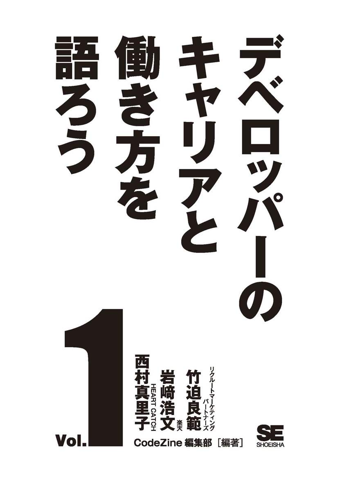
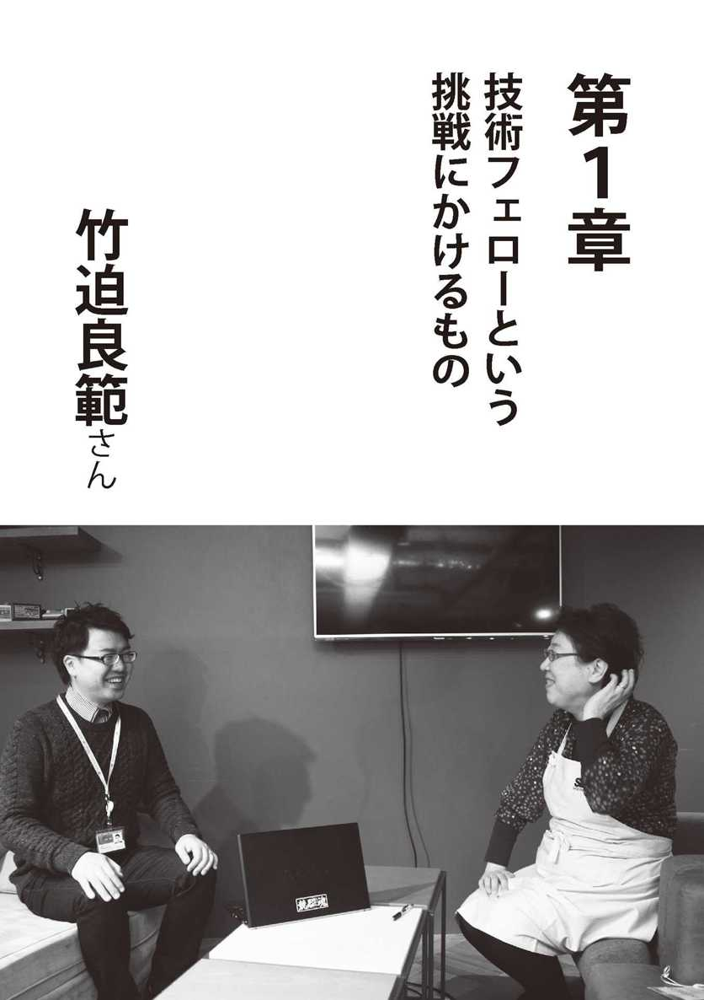
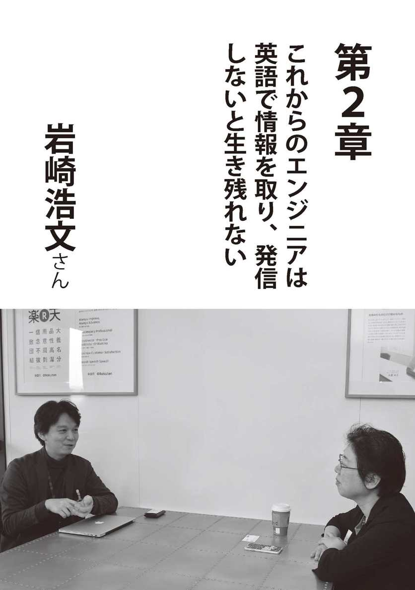
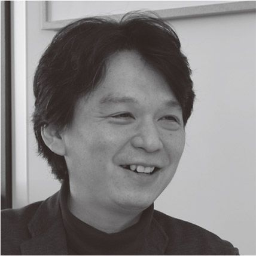
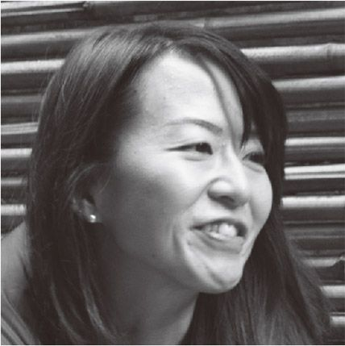
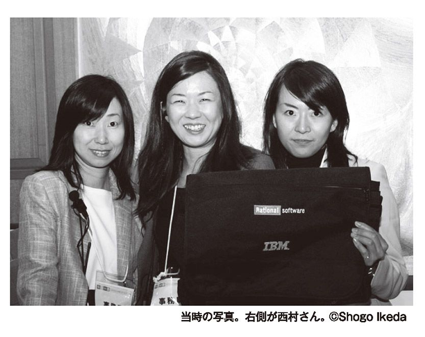
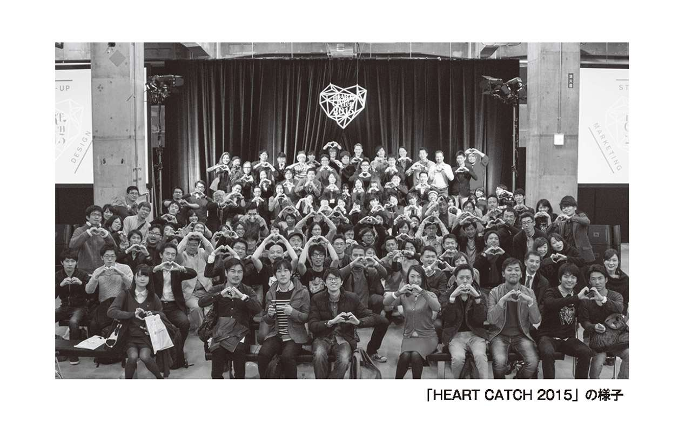

| デベロッパーのキャリアと働き方を語ろう vol.1 (Shoeisha Digital First) | |
| CodeZine編集部 | |
| (2017) | |

本書内容に関するお問い合わせについて
このたびは翔泳社の書籍をお買い上げいただき、誠にありがとうございます。弊社では、読者の皆様からのお問い合わせに適切に対応させていただくため、以下のガイドラインへのご協力をお願い致しております。下記項目をお読みいただき、手順に従ってお問い合わせください。
● ご質問される前に
弊社Ｗｅｂサイトの「正誤表」をご参照ください。
これまでに判明した正誤や追加情報を掲載しています。
正誤表 http://www.shoeisha.co.jp/book/errata/
●ご質問方法
弊社Ｗｅｂサイトの「刊行物Ｑ＆Ａ」をご利用ください。
刊行物Ｑ＆Ａ http://www.shoeisha.co.jp/book/qa/
インターネットをご利用でない場合は、ＦＡＸまたは郵便にて、下記"翔泳社 愛読者サービスセンター"までお問い合わせください。電話でのご質問は、お受けしておりません。
●回答について
回答は、ご質問いただいた手段によってご返事申し上げます。ご質問の内容によっては、回答に数日ないしはそれ以上の期間を要する場合があります。
●ご質問に際してのご注意
本書の対象を越えるもの、記述個所を特定されないもの、また読者固有の環境に起因するご質問等にはお答えできませんので、予めご了承ください。
●郵便物送付先およびＦＡＸ番号
送付先住所 〒１６０‐０００６ 東京都新宿区舟町５
ＦＡＸ番号 ０３‐５３６２‐３８１８
宛先（株）翔泳社 愛読者サービスセンター
※本書に記載されたＵＲＬ等は予告なく変更される場合があります。
※本書に記載されている会社名、製品名はそれぞれ各社の商標および登録商標です。
※本書ではTM、®、©は割愛させていただいております。
はじめに
「あなたはどこに人生の帆を立てますか？」──デブサミ２０１１のサブテーマ
「デブサミは自分語りが一番面白い」──和田卓人
「人生五十年」と言われていた織田信長の時代、三十五歳は晩年の始まりでした。日本の平均寿命がもう少しで九十歳を迎えようとする現代、三十五歳は折り返し地点にも立っていないことになります。
二〇〇三年からデブサミをはじめて、延べ千五百人以上の方々に講演依頼をさせていただきました。一度依頼すると、その方々の人生の経年変化を見守ることになります。また、出ていただきたいと思っている方の経年変化をも見守ることになります。デブサミを通じて見る世界では、「三十五歳プログラマ定年説」はウソのようでした。体力の衰えはあるにせよ、コードを書くのが大好きな人が多く、新しいテクノロジーの中で冷静かつ、ワクワクしている瞳を持って向き合っている方々ばかりでした。
そんなわけで、ご自身の人生を総括しつつ、強烈に帆を立て大海原に船を出した人たちに、デブサミの一セッション四十五分の枠を超えて、とことん話を聞いてみたい！ という想いでできたのが、本企画です。
そもそも、なぜＩＴ業界に入ったのか？ 技術的要因、年齢を魅力に変えるコツ、社会的大きな流れなど、キャリアをピボットさせるに至った要因を合わせてお届けできればと、翔泳社デジタルファーストプロジェクト第一弾として CodeZine 編集部とタッグを組み作ってみました。
あなたはどこにいつ人生の帆を立てますか？ 「三十五歳プログラマ限界説」「四十歳以降は老害」などの、悪しき慣習を横目に、時代の流れを読みながら、自分で自分のハンドルを持ってイキイキとした人生を形成するためのお手伝いが、この本でできればとても嬉しいです。
それでは、よい旅を！
翔泳社 取締役
岩切晃子

竹迫良範（たけさこ よしのり）
学生時代に日本語全文検索エンジン Namazu for Win32 のＯＳＳ開発に携わる。外資系コンピューターメーカー子会社にてＥＣサイト構築を手掛けた後、大学卒業後、独立系ＩＴベンチャーにて大企業向けパッケージソフト製品を開発、大規模対応と国際化を担当する。前職のサイボウズ・ラボでは、中長期のＲ＆Ｄの傍ら、エンジニア採用、産学官連携と人材育成に関わり、ＮＰＯ法人にてセキュリティコンテストの新規事業を立ち上げ、二〇一五年九月より株式会社リクルートマーケティングパートナーズ技術フェローに。
稼ぐために飛び込んだＩＴの世界
岩切 あらためて竹迫君をインタビューするのって、何か緊張しますね（笑）。
竹迫 いえいえ、全然緊張することはなくて。僕も普段こういうことをあまりしゃべらないので。せっかくの機会ですのでいろいろお話しできればと思います。
岩切 竹迫君が多分二十代の頃から知って......。
竹迫 二〇〇六年ぐらいからですかね。高橋さん注１から「デブサミ注２のコンテンツ、どうですか？」みたいなお誘いを受けてからなので。
岩切 サイボウズさんに転職して何年目ぐらいのときですか？
竹迫 ちょうど二〇〇五年の一一月に転職したんですけど、それまでは広島の会社で独立系のベンチャーにいました。ちょっと東京に来て仕事してみようかなと思って、サイボウズ・ラボという研究所に来たんですけど、その翌年ですね、そのお話をいただいたのは。
岩切 まず、そもそも何で初めから東京に来なかったんですかね？
竹迫 あ、面白いですね。質問、そこからですか（笑）。
岩切 エンジニアだとどうしても──大学はいろいろあるけど、高橋さんもずっと北大で、就職でこちらにいらしたんですけど。
竹迫 なるほど、なるほど。
岩切 別に東京主義ではないですけど、普通エンジニアだと東京で働きたいぜみたいに思うのを、あえて地元で働かれたのは。
竹迫 いい質問ですね。僕、就職活動していないんですよ。
岩切 うそ（笑）。そうなんだ？
竹迫 実は在学中に、卒業する前に広島のベンチャーの会社に入っていて。
岩切 バイトで？
竹迫 正社員として入っていました。
岩切 引き抜かれた感じですか？
竹迫 いいえ。そのベンチャーの会社が広島に研究所をつくるというのをたまたま知って。実は最後の面接の日の前夜にそれを知って、今からでも大丈夫ですか？ と言ったら、夜中十二時ぐらいにメールがきて、「いいですよ」みたいな感じだったので。それで翌日面接を受けたら即ＯＫで、卒業を待たずに正社員でもいいんじゃないという話があって、それで二月から働き始めました。
岩切 そもそも大学では電子工学をやっていた？
竹迫 そうですね。もともとは情報科学部情報機械システム工学科という長い名前なんですけど、知能ロボット講座というところでＡＩとかロボットとか、そういう研究をしました。
岩切 今までの研究を見ていると、別にそのままアカデミアに向かってもよかったんじゃないかという気もするんだけど、就職しようと思ったんだ？
竹迫 お金のためですね（笑）。というのが、僕は結構いろいろ稼ぐ必要があって、八人きょうだいの長男なんです。弟二人と妹五人で八人きょうだい。
岩切 すごいね。私そんなの初めて知った。すごい。
竹迫 そうなんです。それで実は僕、大学の学費とかも自分で稼いで払っていて、いろんなバイトとかもしていたんですけど、一時期大学を休学して、三年ぐらいずっとＩＴ系のソフトウェア開発のアルバイトをヒューレット・パッカード（ＨＰ）の子会社でやっていました。
岩切 広島で？
竹迫 はい。広島であったんですね、そういう会社が。そこで初めて Windows を使うようになりました。大学では UNIX を初めて触ってインターネットをやっていたんです。
岩切 じゃ、大切なことはＨＰで学んだみたいな？
竹迫 そういうところです。その中で、もともとはＨＰってハードウェアの会社なんで、そもそもソフトウェアを専門にやっている人ってあまりいなかったんです。そういった意味で、割と自由に開発させてもらったので、そこでいろいろと勉強をさせていただきました。仕事を自分でつくったりするスキルとかも。
岩切 広島で、ＨＰでソフトウェアの仕事って何があったんですか？
竹迫 最初はＥＣサイトの開発をしました。それまでＨＰは、まだ COMPAQ と合併前で、全部パートナー経由で製品を売っていて、直販していなかったんですよ。
岩切 じゃ、パソコンとかのＢ２Ｃサイトを。
竹迫 一番最初は関数電卓とかＨＰ２００ＬＸとか。
岩切 懐かしい（笑）。
竹迫 そういうのをかなり売っていたＥＣサイトだったんですね。もともとはサプライ品の子会社みたいな感じでできたので、昔でいうペンプロッターとか、ああいうサプライ品を売っていた会社なんですけど、時代の流れでＥＣサイトをつくって直販しないとというので、まずそこで始めて、その後にＨＰの本社も直販するというときにＥＣサイトをつくりました。
ベンチャーで作って売るところまでを経験し、ビジネスのツボを学ぶ
岩切 私、今の話で竹迫君の人生をすごく知らないところまで見てしまった。というのは、今日の話のテーマは「お金」にしたいと思っていたんですよ。
竹迫 そうなんですか。いいですよ（笑）。
岩切 ──と思っていたのと、あと竹迫君って、二〇〇六年当時だと何歳ですか？
竹迫 二〇〇六年だと、僕は一九七七年生まれなので、三十歳前ですね。
岩切 何かすごく落ち着いているなと思っていたんだけど、やっぱり八人きょうだいだというところで、何ですかね。長男という、まとめなくちゃいけないみたいな、しっかりしなきゃみたいなのも小さいときからあっただろうし、あと、自分で学費を払うという厳しさ。
竹迫 昔の国公立大学の学費は安かったので。そういう意味では、金銭的な問題で上京できない環境だったので、地元でというのはあったと思います。あとは就職するときも、普通の就職活動はせず、ＩＴ系の割と稼げる会社というので選びました。
岩切 で、サイボウズに転職するわけですよね。何年働いたんですか？
竹迫 そうですね。ドリーム・アーツは三年半ぐらい働きました。
岩切 ドリーム・アーツさんって、ブログとかつくっていたかな。
竹迫 INSUITE Enterprise という大企業向けのグループウェアをつくっている会社です。今だと社長がＩＴ断食とかを提唱していて。みんな会社の中でＩＴのツールばかり使っていて、実はツールに使わされて、逆に生産性が下がっていないですか？ みたいなことを言って。属人化された仕事とか、個々にメールベースでやりとりするのではなく、ちゃんとグループウェアで仕事を進めて、スケジュール調整も時間をかけずにシステムでやったりとか、情報共有のやり方もあらためて考え直しましょうみたいな感じのコンサルティング提案も含めて。それを官公庁や大企業向けに売っているという会社です。
岩切 サイボウズさんとそういう意味では同業他社という。
竹迫 はい。まさに競合でした。
岩切 その頃って .NET エンジニアだったということ？ 違いましたっけ？
竹迫 それはなかったです。実は、経験として .NET 開発はしてなくて。ＥＣサイトをつくるときに ASP とか、マイクロソフトのサイトサーバーコマースエディションという、今ではあまり聞かないそういうミドルウェアとかを使っていた経験はありました。
ドリーム・アーツですごくよかったのは、ベンチャーの中で、製品を自分たちでつくって売ることが体験できたことですね。特定のお客さんはいないんですけれども、大企業に売るためには、カスタマイズもしくはワンオフとかでいろいろやらないといけないので。
あとはトップ営業とかも同行させてもらったりした経験は今でも役に立っています。どういう意思決定のプロセスで、会社の中でソフトウェアを買うのかという。そういうことをエンジニアの立場で知れたのはすごくよかったです。そうすると、決裁権を持っている役員の方というのは、お年を召している方がいらっしゃるので、小さいアイコン、小さい文字でアプリをつくるとやっぱりダメで。大きい文字や大きいボタンを作ると。例えばプレゼンテーションもＡ４じゃなくて、Ａ３ぐらい大きい文字でちゃんと持っていくとかですね。
岩切 そういうビジネスのツボみたいなところ。
竹迫 そうですね。だからフェイスブックのボタンって小さいですけど、あれはあまり優しくはないですね。多分、小さい iPhone とかだとよくずれてこすったりとかすると思うんですけど、そういうユーザーインターフェイスとかのつくり方とか。それで実際に社内に導入した後は、総務のお姉さんとかが喜んで使ってもらえるようなものにしないと、定着しないので、女性に優しいインターフェイスとか、そういうものも一緒につくったりとかしました。決裁で通すためには、そこのところがわかりやすいといいです。その後はずっと使ってもらうためにＵＩの作り込みとか。そういったことが経験できたのはよかったです。
岩切 広島にいながら、そんな全部の工程が見られるというのはいいですね。
竹迫 はい。よく地方ではサポートセンター的な部署がつくられるんですけれども、プロダクトの開発のチームを全部そこに置こうということにして、最後のほうは僕が製品のリリースマネージャー的な立場になったので。そこでいろいろと人の管理をするとか、あと今でいうプロダクトマネージャー的な話とかを経験しました。
スキルを身に着けるために、あえて不得意なところに踏み込む
岩切 そんなことを聞くとすごく、そのまま広島にいて、偉くなる道もあったんじゃないかという気もしますけど、東京に出たくなっちゃった。割と任せていただいていた感じですよね。
竹迫 そうですね。二つあって、僕はやっぱりマネジメントに向いていないなと感じたのが一つと......。
岩切 なんで？
竹迫 その頃はまだ若かったので、いろいろとプログラムのコードを書きたかったりとか、もっと新しい技術をやりたかったりというのがあったんです。もう一つは、中長期的な面での問題解決は、今の会社では難しいかなと。目先の日々起こっていく問題に迅速に対応していくという仕事だったので。そういった意味では、問題解決能力というのはものすごく研ぎ澄まされていて、そこの経験は積めたんですけども、これから先、五年後、十年後とかの日本を考えたときに、どういう問題を解決したらいいんだろうと、そういう問題設定をあらためて考えたいなと思って。
岩切 そして三十前にして。
竹迫 あと、僕は大学院に行かなかったので、そういう研究者とかアカデミアの道というのも、もう一度目指してもいいのかなと思い始めたタイミングで、サイボウズ・ラボという研究所の設立記事を目にしました。
岩切 当時、サイボウズが鳴り物入りでラボをつくるぞみたいな。
竹迫 そうなんです。当時はサイボウズも優秀な技術者を集めるということに力を入れていて、あとはウェブ２・０がはやっていたので、世界に打って出ていくためには、新しいウェブサービスをエンジニア主体でスピーディーにつくって、リリースしてやっていくのはどうだろうかという。その流れに乗っていたんです。その意味だと、前のドリーム・アーツで僕は国際化エンジニアみたいなことをやっていて、いわゆるインターナショナリゼーションという、i18n という仕事もやっていました。
岩切 それはプロダクトのタスクとしてやっていらっしゃった？
竹迫 そうです、はい。
岩切 では、コミュニティーデビューしたのは、ドリーム・アーツさんのところでという感じなんですか？
竹迫 はい。その頃からやってました。拠点が広島だと、東京の勉強会とかに行くのが難しかったんですけど、Shibuya Perl Mongers ができた当時から通っていました。
岩切 広島から？
竹迫 広島からです。
岩切 Shibuya Perl Mongers って二〇〇三年ぐらいですか？
竹迫 はい。最初は宮川達彦さんがホストしていたんですけど、アメリカに行くかもという話があってバトンタッチしました。YAPC::Asia注３を日本でやりたいねという話もあって、それも一緒にやり始めたのは二〇〇五年末からで。日本で最初に YAPC::Asia をやったときに、高橋さんとか Ruby コミュニティの方々とも交流していたので。それで多分、「何か面白い人いない？ デブサミどう？」みたいな流れで声がかかったという感じだと思います。二〇〇七年ぐらいですかね、多分。デブサミは。二月のとき。
岩切 Shibuya Perl Mongers をやって、Perl Mongers の人たちがすごく違和感を感じながらデブサミをやっていたと。
竹迫 そういう意味では、僕はいつもアウェイです。常に自分の得意なところではなく、不得意なところにあえて踏み込んでいって、スキルを身に着けるということをこれまで意識してやってきました。
岩切 何で Shibuya Perl Mongers に行こうと思ったんですか？
竹迫 その当時はやっぱり、何でなんでしょうね。
岩切 かなり特殊なコミュニティーだと思うんですけど。
竹迫 それまでは、インターネットでいろいろと Perl の最新情報のやりとりをしていて、それで Shibuya Perl Mongers の存在を聞いて、じゃ、行こうかなと思って行ったのがきっかけですね。だから最初はネットでずっと Perl の情報をやりとりしていてという感じです。
Shibuya.js とかも立ち上がりはそうで、ネット上で JavaScript の最新情報をアウトプットしている人たちで、id:secondlife さんや id:nagayama さんが発起人なんですけど、そういう人が、ブログを書いている人にコンタクトをとって、「あ、この人福岡に住んでる」とか、「この北海道に住んでいる」とかわかって、今度イベントをやるからぜひ来てね、というふうに誘って会ってみたり。ブログで情報発信していた人に個別に声をかけていったりしてコミュニティーをつくっていったというのが、当時の二〇〇三年から五年ぐらいの話です。
岩切 だからどっちかというと、コミュニティーで活躍している竹迫君は知っているんだけど、そんなリリースマネージャーをしていたとか。
竹迫 あまり外では言わないので、知られていませんね。
岩切 トップ営業と一緒に行っていたとかは、今日初めて聞いたという感じです。
竹迫 あと会社の経験で面白かったのは、電力会社向けに提案しに行ったときで。あれって三年越しとか普通に検討の時間がかかるんですよ。すごく遅いなと、会社によってはやっぱり。だからそういうときにはＣＩＯみたいな人とかとお話しする機会も得たりとかしたのはすごくよかったです。
研究、採用、育成とさらに仕事の幅を広げた
岩切 そういうべったりエンタープライズの世界からコミュニティーに足を入れつつ、今度はアカデミアンというか。サイボウズ・ラボって完璧な意味でのアカデミアンでもなくて、企業に貢献する、または社会に出るために何か見つけろみたいな感じだったので、民でもあり、アカデミアンでもあるみたいな位置づけだったと思うんですけど、その中で竹迫君ってどういったことを主にやっていたんですか？
竹迫 まずは立ち上げのときは人数が少なかったので、人を増やさないといけないということで、エンジニアの採用をやりました。そもそもコミュニティー活動とかをやっていたので、それを仕事にするのはどうかということで。会社を会場にして勉強会をやったり、いろんなカンファレンスを主催したり。それを実は業務時間で自由にやらせてもらったというのがすごく大きかったですね。それまでの会社では、それは業務時間外だと。それが仕事にできたというのが、多分一番大きかったのかなと思いますね。九年ぐらい続けさせていただきました。
岩切 すごくいっぱいイベントをやっていましたよね。
竹迫 やっていました。会社の中では自分の研究タスクというのを持っていて、もともとは前の会社からウェブセキュリティーの改善についてすごく問題意識を持っていたので、セキュリティーという切り口で研究を始めました。何かしらいろんな人が楽に対応できるものをつくれないだろうかというのを軸としてやっていって、その一方として、採用とかでいろいろと対外的な活動をやっていたという感じです。
岩切 採用はエンジニアの採用？
竹迫 エンジニアです。営業さんとかは全然関係なく。
岩切 面接とかもそうですか？
竹迫 はい、サイボウズ・ラボに来る人は全員面接をしました。あと後半のほうは、サイボウズ本社で新卒エンジニアの採用を強化していくので、一緒に新卒採用の活動をしたり。それで産学連携みたい形で大学へ行ったりもしました。
普通だとサイボウズというのは、なかなか学生さんにとっては選んでくれない会社なので。名前が知られているもっといい会社がいっぱいある中で、どうやってうちみたいな会社に来てもらうかと、知恵を絞りました。
岩切 例えばどんなことをやりました？
竹迫 例えば、研究室の裏側に隠れている人、いわゆる就職活動を始めていない人たちと早期に接触をして、ほかの会社を選ぶ選択肢もなくうちに来るというのがいいんじゃないかなと思ってもらうとか（笑）。
岩切 竹迫君自身がそうだったように（笑）。
竹迫 そうそう（笑）。埋もれている人たち。一般的にもう就職活動を始めちゃった人というのは、やっぱり大企業に行きたいとか、別の思考でいろいろと会社選びをしちゃうんですね。エンジニアに関しては、一般的な就職活動をしないという一定層の人たちとの関係をどうやってつなげていくかとか、というのをやっていた感じです。
岩切 研究と採用と。じゃ、カンファレンスって、イベント自体も採用に絡めて......。
竹迫 採用です。採用のブランディングです。
岩切 ですよね。
竹迫 あともう一つは、社内の育成みたいなことで。海外でも子会社があったので、ベトナムとか上海とか、そういうところでもちゃんとセキュリティーの技術を教えたりとか、あとは新卒採用のエンジニアの人に、ちゃんとエンジニアとしてのスキルとかマインドとかを身に着けてもらうための研修だったりとか。社内の育成、研修というのも、もう一つ業務として。主にその三つですね。自分の研究と採用と育成。
岩切 それってＲＯＩ注４というか、イベントごとにこういう数値目標みたいなのがあるんですね、結局。
竹迫 そうですね。どこのお財布から出ているかによって、ＲＯＩを設定している感じです。
岩切 何となく私の印象だと、竹迫君って割とそういうゴール設定がはっきりしているほうが仕事しやすい人なんじゃないかと思っていたんですけど、そんなこともないですか？
竹迫 エンジニアの人はそういう人が多いんですけど、やってみてわかったのは、特に育成採用みたいなものは半年や一年じゃなく、五年以上見ないと、結果ってわからないので。だからそういう不確実なんだけれども、何かやってみないとわからないというところを調整できたのはすごく面白かったと思います。
岩切 それを竹迫君にレビューしてくれる人って、どういう立場の人なんですか？
竹迫 それは直属の上司の社長だったりとか、あとは人事の人と一緒に仕事をしたので、人事のマネージャーの人とか。
岩切 じゃ、その人たちとの議論を深める中で、次に必要な技術だったり、次の採用の方向性だったりを決めて、それを展開していくんですね。
竹迫 はい。あとは広報ですね。対外的なブランディングというところなので、広報、人事と社長というところですね。
「会社員」から「社会人」への意識の変化
岩切 やりがいってどんなところに......。さっきも長くかかるという。逆に長くかかるからこそ、関心というか自分の中でのモチベーションを高めるというのが大変なことも逆にあるような気がするんですけど。一喜一憂じゃないですけど、イベントで人を選んだりとか（笑）。教育でカバーできないところが見えちゃったりとか、そういうときってどんな感じで？
竹迫 そういう意味だと、サイボウズ・ラボに九年半ぐらいいたときには、社会人としての意識が強くなったというのはありますね。それまでの仕事の視野は会社までだったのが、社会を見るようになったので。そういった意味では、かなり視野が広がったかなという気がします。
岩切 社会とのかかわりの中で会社を見るみたいな。
竹迫 そうですね。仕事の内容がすごく広かったので。よく地方と東京とかでいうと、地方にいると、自社の地方拠点として、やっぱり東京と地方の比較みたいな形でどうしても物を見がちなんですけども、東京に来ると割とヘッドクオーターみたいな機能がそこにあって。
日本全体の中でどうしていくかという議論を東京のほうでやっていると、いわゆる国の政策とかもそうなんですが、そういったところで日本全体のスコープで見られるようになりました。その中で、海外に進出している会社とかも見ていたので、どうやって世界に展開していく足掛かりをつくっていくかとかも。そういうのをいろいろと経験できたので。割とだからそうですね、その中でサイボウズのほうも会社員か社会人かみたいな（笑）。会社と社会、逆転するような形ですね。
会社のために仕事をする人は、結構多いと思います。社会のために仕事をするということをやらせてもらったのは、すごくよかったと思います。もちろんそれも会社の利益につながるような形で。
岩切 つながっている。
竹迫 つながっていますね。
岩切 すごくその感覚、わかります。
で、やっていらっしゃって、そこまでまた信頼と実績を出していたと思うんですけど、なぜにまた......。
竹迫 そうなんです。きっかけはリクルートグループの中で三月ぐらいに話をもらって。エンジニアの組織を今つくっているリクルートのグループ会社があるんだけども、これから人数を増やしていくときに、ちゃんと組織を整備したりとか、技術を高めたりするときにリードしていく人がいないので、どうだろうかという話があったんです。それは面白そうだなと思って、話を聞いてみて、社長と会って。実は僕と同年代の人が今、社長をしていて、山口文洋さんなんですけども、そこで話を聞いてみると、これはちょっと面白そうだというので、九月に入社。半年間ちょっと準備期間をもらって......という感じです。
岩切 私は、このまま竹迫君はコミュニティーと研究と採用みたいな感じで、サイボウズ・ラボの中で生きていくのかなとずっと思っていたんだけど、何かそれは運命の出会いみたいな感じだったんですか？
竹迫 そうですね。だからそういう道もあったとは思いますね。ただ、それが結構恵まれていた環境の中だから活動できたというところもあって。でも、そういう働きやすい環境というのは、自らつくっていくこともしていかないと、これからいけなくなるだろうなと思っていて。
そういう意味で、リクルートグループというのは、創業してから五十六年目になる日本の会社なんですけども、その中で新しくネット系のエンジニアの組織をつくっていくというのは、すごくチャレンジングなことかなと思って。それがもしもできるのであれば、いろんなほかの日本の大企業でもできる可能性があるかなと思って、それを成功事例として横展開していきたいなという思いがありますね。それは社会のためという感じでもあるんです。
前職の採用活動で一番、問題意識を持っていたのは、優秀なエンジニアの学生ってめちゃめちゃたくさんいるんですけども、そういう人がちゃんと気持ちよく働ける職場環境というのは、実はまだ日本は少なくて、もったいないなと。力がある人はすごくいるのに。一部のネットベンチャーとか、ネット系の大きな企業は、ちゃんと働きやすい環境や制度を用意しているけれども、ほかの日本に昔からある会社はそこまで変わり切れていないところがあって、そういったところで何か、学校で育成したはいいけども、その人が活躍できる社会の場所を用意してあげるのは、大人の役目かなというのをすごく感じて。
そういう場所は日本でもつくっていかないといけない。多分そうしていかないと、優秀な人はみんなアメリカとか海外に行っちゃうので。特に今はもう言語の壁というのがなくなって、英語ができる人であれば、もう全然日本の大学行かずに、完全にオンラインで英語の講義とかも見ています。
岩切 採れちゃいますからね。
竹迫 はい、そうです。コンピューターサイエンスとかは、もうだから英語で、オンラインで勉強したほうが、最先端の技術とかも、基礎も含めながらちゃんと一流の先生から学べる環境があります。
技術フェローとしての新たな挑戦
岩切 何でテーマを「お金」にしようと思ったかというと、竹迫君の入った会社って、営業が強い会社ばかりだと思ったんですね。だから、逆に技術が強い会社、例えばグーグルとか営業がほとんどいらっしゃらないと思うんですけど、そういう会社ではなく、あえての営業が有名な会社を選んでいる理由は何なんだろうというのがあって。その中で営業じゃない役割をちゃんと経営者と握ってやってきているというところが、竹迫君の面白いところだと思ったんですね（笑）。
竹迫 そうですね、とても面白いと思います。
岩切 真逆の印象というか、例えば竹迫君はグーグルにいますというほうが、逆にわかりやすいんだけど、あえて営業会社の中で技術の社内エバンジェリストであり、社外に対してコミュニケーションパーソンとして出ているというところは、自分のキャリアを振り返ってどう思いますか？ まず、なぜそこを選んだのかということかも。
竹迫 なるほど。
岩切 竹迫くんが選んだ会社に共通するのは、そこには多分、お金。ＩＴってお金を呼ぶというか、やっぱりお金があるところにＩＴは、もっと必要になってくるという法則があると思っていて。ただ、お金を扱うとなると、効率的なシステムをつくっていく必要があると思うんだけど。もしかしたら、リクルートグループが、これからＢ２Ｃマーケットを目指していくとなると、テクノロジーに投資を集中し、技術者の社内的な地位が上がっていくのかもしれない。私からすると、今までのリクルートという会社はどちらかというと、（営業の）剛腕でドンといく印象で、ベンチャーであり続ける日本でも稀有な会社だと思っているんですよね。その前の二社も営業が強い印象なので、逆に言うと竹迫君が会社を選ぶ理由の一つは、もしかして営業というか、お金というのがあったのかなとも思ったりもしました。
竹迫 なるほど。そういう意味だと、実は──わからないんですよね。
岩切 自分がもらうだけじゃなくてね。
竹迫 そうですね。リクルートグループの面白いところは、新規事業を常にやっているというところで、普通の小さいネットベンチャーって超リスクがあるわけですよ。
岩切 まあね。突然早期退職プログラムモードになっちゃう会社もあったりとか（笑）。
竹迫 ほかの会社のことはあまり言えないんですけども、新しく事業を起こすのは、今はすごく簡単な時代になってきていて、そういう意味だと、勝ち筋を見いだして一気に踏み込むのは、やっぱり資本力のある会社じゃないとできないなというのはすごく思っています。
サイボウズもそういった意味では、割と資本力はある会社なんですけども、もっと大きなことをしようとした場合とかは、もっと大きな母体というか、そういうのが必要だというのがあって。リクルートはグループ全体としてはかなりの売上高を持っている会社なので、その中で何かそういう新規事業とかをまさにコンシューマー向けに展開できる機会があるんだとすれば、今までとは違うやり方でやらないといけないので。そこはちゃんと内製エンジニアというか、自分たちで物をつくれるエンジニアを自社で抱えて、その中で物をつくっていくことを挑戦していかないといけなくて。
それでリクルートマーケティングパートナーズが今新しく出しているサービスというのが、スタディサプリ（旧：受験サプリ、勉強サブリ、英語サプリ）だったりしていて、そういうのをリクルートグループの中では珍しく挑戦している一つの事業会社です。だから、新規事業をつくるときのやり方が全然違うので、それを勉強したいという感じですね。
もともとはゼクシィとリクナビ進学とカーセンサーという三つの事業が合わさってできた会社なんですけども、新規事業もいくつかやっていて、その中でサプリシリーズをコンシューマー向けに直接課金でやった。今までは全部広告マッチングモデルだったんですね、リクルートというのは。教育環境格差の解消を目指して新しいコンシューマー向けのビジネスに挑戦したいという話があって、それは面白そうだと思って。
岩切 リクルートらしくない感じなんですかね。
竹迫 今までリクルートって就職するときに初めて知るとかというのがあるんですけども、スタディサプリだと、最初にリクルートを知る年代が、受験だとか、もしくは小学生からのオンラインの学習のサービスをやっているあたりになるんですね。そうなってくると、リクルートを最初に知るきっかけになる。マイ・ファースト・リクルートみたいなサービスを展開しているという感じです。
今はどんどん紙の媒体の発行部数が減っているというのが業界の常なんですけども、ゼクシィはその中でも新しい取り組みというのをいくつかしていて、「恋結び」「縁結び」といって、出会いや婚活とかも、実はゼクシィのブランドでやっているんです。ゼクシィブランドだと、みんな女性の人も安心して参加できるので、しっかりしたユーザーさんが多いです。社内の男性エンジニアでも使っている人がいますけど、そこで出会っている人もいたりとかして。
岩切 なるほど。
竹迫 社会問題で晩婚化とかも進んでいるし、別途機会をつくっていく。多分それが今の会社の使命という感じですね。
あと、こういう受験とか勉強も、地方でいっぱいいろんな格差があって、家庭の経済事情や住んでいる地域によって教育環境の差があって、それが原因で学習機会を失っている人もいるんです。今まで官民連携の活動をしていて思ったのは、官の立場でいろいろと大規模に制度を改革するというのは、ほとんど難しいので。市町村単位とかはその裁量の中でうまくいく計算があって。全国一律に教育改革をするんじゃなくて、各地で別の選択肢を用意していく。それで格差を埋めていくみたいな。そういうところはちょっとやってみたいなというのは、前の会社から思っていた問題意識なので。
岩切 それこそ、一般の学習塾や通信教育よりもお安い金額で提供されているということで。
竹迫 月額九八〇円で提供しています。
岩切 地元で塾に通うよりも安くて、勉強ができる。
竹迫 特に東京以外は学習塾ってすごく少ないので、僕も地方にいたからわかるんですけど。
岩切 私も地方出身者なのでわかりますよ。勉強しようと思ったら通信教育で勉強するしかない。学習塾がないから、受験勉強するときとか。
竹迫 都会じゃない地方でも利用者数が多いですね。
岩切 そういう意味では、安く勉強できるというのは魅力的ですね。貧しいので高校ぐらいまでしか行かせてもらえないというのが当たり前でしたが、今でもそういうところはありますよね。
竹迫 裕福な家庭の人が東京に仕送りも出して勉強させてたりとかありますけども。今、実は、フィリピンとインドネシアにも進出していて、Quipper（クイッパー）注５という会社を買収して一緒に仕事をしています。そこで海外の英語圏に向けて、こういう教育のサービスとかをやっていて、そこもやっぱり島国とかではすごく必要だったというのがわかりました。
岩切 似ているような環境のところで。
竹迫 日本以外の場所でも必要だったなとすごくわかった感じですね。今はネットがあるので、それを使っていろいろと教育の分野でも解決できそうかなという兆しが見えています。
岩切 そうか、そうか。リクルートも世界進出を狙っているんですね。
竹迫 はい。国内向けはスタディサプリ、海外はQuipperでグローバル展開していく予定です。そういった意味では、僕が技術フェローという仕事を持っていますけれども、全体最適の視点でシステムの技術を見たりすることも、中長期的な仕事の内容に入っていたりします。
岩切 今、どんな仕事しているんですか？
竹迫 人と組織とキャリアパスの整備と、採用、そんな感じですね。あと技術。大項目で五つぐらいです。
岩切 何でもやっているみたい（笑）。
竹迫 そういった意味では、前の会社では、いろいろと好きにはさせてもらったんですけども、会社全体でどうしていくという意思決定は全く関わらずやっていた感じなんです。今はそういう意思決定の部分まで一緒に巻き込んでやれる立場なので、そこで新しい挑戦をしているというところです。
岩切 逆に言うと、これは書いていいかどうかわからないけど、どちらかというと、私、竹迫君って、世の中に絶望している人なのかなと思って。
竹迫 えっ、そうですか。
岩切 すごく頭がよくて、いろんな世の中の問題や課題についても詳しくて、ちゃんと勉強していて、自分の視点を持っているんだけど、それをおくびにも出さずに生きている。日々感じている闇というか問題をこういう形で、会社の中で解決していこうとか、これからの中で実現していくというふうになっていくというか、肯定的にとらえて活動していくというよりは、横で伴走していくようなイメージを持っていたんですけど、何かスイッチが入ったんですかね？ 一つ、結婚したところでちょっと変わったような気がするんですが。
竹迫 それはあるかもしれないですね。独身のときは、失うものは何もなかったんですが、今結婚して六年たって、七年目ぐらいなんですけど。将来生まれてくる子どもがちゃんと活躍できる社会になっているだろうかとか、そういうところはすごく意識したりしていますね。そういう意味だと、日本に悲観している人はもう海外に移住したりしている人も、同年代ではいるんですけれども。日本で拠点を構えて、これからもずっと生活していくと考えたときは、大人の人がちゃんとそういう関係を整えないとダメだなと思っていて。
岩切 逆に、質問をかえると、日本で生きていく中で、肯定的に問題に取り組んでいくというか、仕事の中でも取り組んでいくみたいな気持ちになったということなんですね？
竹迫 そうですね。それが唯一できそうな会社だと思ったので。
岩切 そこにチャレンジできそうだという。
竹迫 そうですね。
岩切 竹迫君、今何歳ですか？
竹迫 三十九です。一九七七年生まれです。
岩切 じゃ、二十代後半で転職したからとか、割と十年周期で変わっているのかな？
竹迫 そうかもしれないですね。
岩切 九年半ぐらい、サイボウズさんにいらっしゃった。
竹迫 そうです。九年半ぐらいです。
岩切 何か年代ごとみたいな。
竹迫 フェーズはいろいろあると思います。
岩切 五十歳になったときに何をしていたいですか？
竹迫 五十歳のときは、また自分で会社つくっている可能性が高いかなと思います。リクルートで働いたあとに起業する人も多いです。
あとは自分の中でビジネスの型を知るというのは、今までやってこなかったので。ネットベンチャーでは自由な中でやっていたんですが、やっぱり本来ある型をちゃんと知ることも重要だなと思って、それを今の会社で知りたいというのはありますね。だからベンチャーの技術顧問やＣＴＯは、多分、やろうと思えば若い人でもできたりするんですけど、大企業の中のＣＴＯや技術フェローの役割は、結構難易度が高いかなと感じています。
岩切 形もすごくしっかりなさっていると思いますし。
竹迫 それであえて型を知った上で、どう壊していくかというのは初めて次につながっていけるので。だからちゃんと型を知っておかないと、上手に破ることってできないんですよね。そういう意味ではちゃんと型を知ろうというので、今勉強しているところです。
今後のキャリアの選択肢を広げていくために
岩切 蒸し返して悪いんだけど、よく「河村さん注６と竹迫君が結婚してよかった」という話を何度もしていて。
竹迫 二人ともだいぶ変わりましたよね。
岩切 何でかというと、竹迫君は自覚ないかもしれないけど、とにかく私、あるところで悲観して日本から逃げ出してしまったりしたらどうしようとか、ちょっと心配だったんですよ。何か飲んでいたりとか。普段はすごくいい人で、こういう感じで、理路整然としていて、パースペクティブが広いなあと思って。誰に対してもこんな感じで、ホスピタリティを感じる話し方をする人なんだけど、たまに世の中に対してディストピアを予見した「ブラック竹迫」が出てくるときがあって。
竹迫 そういう意味だと、僕はジャーナリストみたいだと言われたことがあって、新聞記者の人から。
岩切 そうそう、ジャーナリストっぽい。
竹迫 だから普通のエンジニアじゃなくて、ちゃんと社会の問題も把握していて、すごく面白いというふうに言われます。それは珍しいと言われます。
岩切 何でもすごく詳しいんだよね。日本の人口問題だったり、過疎の問題だったり......。あと外交問題にしても、すごく詳しい。言うといろいろ政治的に色がついちゃうというのもあるんだと思うんだけど、表立っては言わない。でも、すごくちゃんと自分の意見を誰に対しても言えるほど勉強している。それは昔からそうだったの？
竹迫 高校時代ですね、そういうような問題意識を持ったのは。
岩切 理系なのに。
竹迫 そうですね。そういう理系とか文系とかというくくりは、多分これからはなくなってくるかもしれないんですけども。
岩切 ご家族がそういう教育だったの？
竹迫 全くないですね。
岩切 竹迫君自身の問題として（笑）。じゃ、本を読んだり新聞を読んだり。
竹迫 一つきっかけだったのは、高校生の頃の社会科の課題で原子力発電所の燃料サイクルの問題についていろいろと自分で調べたりとか、その後大学に入ってから、オウム真理教の事件があったりとか。そういう時代の流れがありましたね。その後、会社に入ってから９・１１とか。サイボウズにいたときに、３・１１とかもあって、それぞれいろいろと考える節目が出てきたので。
岩切 それを発表しようという気はない？
竹迫 まあ何か機会があればいいですけど、ただ、それというのは、ちゃんと背景のバックグラウンドがある人が言わないと、何の説得力もない話なので。
岩切 そんなことはないと思うんだけどね。そういう批評家じゃなくてオピニオンとしてというか──ちょっとこの対談と話がずれるかもしれないけど、今、私たちは新しい歴史観や価値観を創造する必要がある時代だと思っていて。今までオピニオンだった人たちを批判するわけじゃなく、自分たちにとっての必要な言葉を探す必要がある時代だと思うから、バックボーンがあるなしに関わらず、自分の意見を持っている人は言い合うべきと思うんだよね。私は何か、逆に自由に卓抜な意見が言える時代になるといいなと思いますね。
竹迫 そういう意味だと、セキュリティコンテストは各種メディアから注目してくれていて、それで結構いろいろと、インタビュー記事を載せてもらっています。
岩切 そうか、だから取り上げてくれていたと。
竹迫 そこは一つ技術を切り口にしていろいろと語れる機会をいただきました。今は会社の中でエンジニア組織のビジョン、カルチャーをつくっていくという仕事もしています。最終的に価値判断の基準となる核みたいなものをちゃんと言語化していく。それをみんなと対話しながら、ダイアローグなどの手法を使って、みんなが感じるところを吸い出して、その中で共通のビジョンをつくっていく。そういうのは実は、会社のコアコンピタンスが何だろうかと考えるときも、もともと何年かシェアードビジョンという取り組みの中でやってきたりしていて、それのエンジニア版みたいなものをやっているという感じです。
岩切 技術者をたくさん入れて、会社を変えていこうといったときに必要なことなんですよね。
竹迫 そうですね。もう今の時代は、上から決まったことを下に全部通達するみたいな、そういう時代じゃなく、だからみんなで一緒に対応しながらやっていくという感じの時代なので。まさに市町村とかもそうですね。
岩切 時間がかかるかもしれないけどさ、対話というかダイアローグの中で、もう一回ストーリーをつくっていくみたいな。
竹迫 そういうのをやっていかないと全然ダメですね。マンションの問題もそうでした（笑）。そういうコミュニティーとかって、いろいろつくっていったりとか、バラバラな人の意見をまとめていったりするスキルは今後必要になってくると思います。
いってみれば、大企業の中というのは、いろんな規則がすごくあって、日本の中でもいろんな規制とかあるんですけども、そういったところからはみ出るときに必要なのというのは、ちゃんと型を知った上で、「はみ出たい」という例外処理をどう認めさせていくかというところ。ちゃんと型を知っていないと、破り方を知らないから、よく問題になっちゃうんですね。やり方を知らないから、変な話の持っていき方をして、全然変わらない。
今はエンジニアに対して優しい会社って、ぽつぽつといろんなところにできていますけれども、それがずっとあるわけでもないし、昔のドットコムバブルの後の、またまたライブドアショックの後の、いろんな変化を見てきているので、揺り戻しもあるかもしれないと思っています。そのとき、ちゃんとエンジニアが働ける場所を自ら用意できるのか。そういうスキルを身に着けておきたいなというのはありますね。
環境は自らつくるもの。与えられるものじゃなくてつくっていくもの。そういう意味では、今のエンジニアの中で割と来ている技術特化志向の人、あるいは大企業の中で年をとっているエンジニアの人というのは、これから結構困ってくる感じかもしれません。環境がちょっとよくなくなったときに、今自分がもらっている給料に見合う別の仕事が、別の会社にあるのかという。そういう問題で困っている人を採用活動中に見てきたので、自分はそうならないようにしようと。技術一点突破というのはコアとして持っていますけども、それとは別のスキルを持っておくと、選択肢がまたさらに広がるのかなと。選択肢を狭めるよりかは、広げていくために。教育とか自分の経験の獲得というのは、将来の可能性を広げるためにやっていく。
そういった、自分のキャリアの今後の選択肢を広げていくために、今ここの会社に入った感じです。じゃないと、エンジニアはとがった感じになって、世界にどんどん流れていっちゃう。日本にずっと残っていくという選択肢はつくれない時代になりそうかなと思って。
岩切 働く上で大事にしていることは何ですか？
竹迫 おっと。聞かれるまで考えたことはなかったです。強いて言うと、不満だけ言って、何もそれを改善しない人にはならないみたいな感じですかね。
岩切 できることを探す？
竹迫 そういった意味だと、自分はあまり仕事に対して不満を持ったことがなくて。それは何でかというと、これはおかしいなと思ったときには、何かしらそういうのが起きないように、システム思考で自分の中で改善行動をしているんですけども。与党精神というか、文句だけ言ってもそれだけでは変わらないので、だからどうやってそういう問題を片付けていくかみたいなところをちゃんと、筋道を立ててやれる人にはなりたいという感じです。
岩切 どうなんですかね。私はデブサミを始めたときって、オブジェクト指向とアジャイル開発は絶対来ると思って......。
竹迫 なるほど。すごいですね。当たってるじゃないですか。
岩切 いえいえ（笑）。何かわからないですけど、それだけでやってきたんですけど、何かもう、でもそれって当たり前じゃないですか。
竹迫 当たり前ですね。
これからの時代は常に学び続けないといけない
岩切 これからのエンジニアが持っているべきことみたいなことを最後に。考え方でもいいし、さっき言った、日本にいるのであれば、いろんなことを逆に知っておいたほうがいいということもあるでしょうし。
竹迫 エンジニアに向けてですか。
岩切 向けてですね。技術でもいいし、関心テーマでもいいし、知っておいたほうがいいと思うこと。特に若い人ね。アンダー25ぐらいの人たち。「期待したいこと」でもいいです。
竹迫 一つ、もうこれからの時代は常に学び続けないといけない。学ぶことが好きになる、それが絶対必要です。だから学ぶことが嫌いになると、もうそこで終わっちゃうので、昔でいうエンジニア三十五歳定年説みたいなものは、新しい技術を吸収できる限界とか、マネージャーを任される大体の年齢とかが、年収に見合うものが三十五ぐらいだというのがあったんですけど、ふたを開けてみると、今そんなことは全然なくて。それで残っている人とかを見ていると、常に学び続けている。五十代とか六十ぐらいの人でも、もう最先端のことを常にやり続けているエンジニアの人も第一線で頑張っている。
その源泉というのは「好き」なんですよね、新しいことにどんどん触れていったりとか、そういうのが好きじゃないと続けられないし、楽しくないと思うので、だから若いうちから学ぶことを好きになってほしいと。学ぶというのは、勉強することとは違っていて、勉強は「強いて勉める」みたいな嫌な感じなんですけど、勉強じゃなくて、やっぱり学ぶという。そこがすごく大事になるのかなと思いますね。
なので、高校生までは教科書のとおりに勉強するみたいな感じで、順にステップアップして、ここまで自分は到達できましたみたいな基準があるんですけど、社会に出るともうそういう基準もないし、教えてくれる教科書もないし、教科書がない中でどうやって学んでいくか。特にＩＴはまだ教科書がない新しい分野がどんどんできていくので、それをどうやってやっていくか。ある程度言語化されて体系化されていったものは、多分書籍になったりとかするんですけど、そこまではタイムラグがすごくあるので、そういったところを、自分で好きでずっと学び続けるかと。その意味だと、CodeZine注７といった媒体は本にならないけれども、そういうメッセージとかも伝えられるし、すごくいい場所かなと思います。
岩切 ちなみに今、竹迫君は、例外処理をするために型を学んでいるんですね？
竹迫 そうです。だからトライキャッチなプログラミングばかり続けていてもいけないので、それを当たり前にしていく。そのオブジェクト指向とか、ああいうものも今、当たり前になりましたけども、そういうのは亜流じゃなくて、主流にしていくために、最初は例外処理なんですけれども、それを通常の正常のフローに持っていく。それが当たり前にしていく。そういうのがちょっと必要なのかなと思います。割とだから今の会社の中では、例外処理されてきたところもちゃんと精緻化していくという作業を今しております。
岩切 エンジニアという。なるほどね。Ｂ２Ｃというものをもとに。
竹迫 そうですね。それがリクルートにとって新しい当たり前のビジネスモデルになっていけば、変わっていける。
岩切 それをやり終えたら、多分竹迫君は、新しい例外処理をやりにいくんだよね？
竹迫 かもしれないですね。その可能性はあるかもしれません。今は働き方がいろいろあるので、自分も今は兼業申請を出していて、別の仕事とかもやったりしています。高知高専（高知工業高等専門学校）の先生とかもやっていますし。
岩切 いいですね。
斉木 三十五を越えてくると、ちょっと学びに対する恐怖心、吸収力が減ってくるというか、そういうあたりがあると思うんですけど、そういうのを感じたことはありますか？
竹迫 最近買っている本が変わりましたね。昔は技術書ばかり買っていたんですけど、今は割と経営書とか、そういうのをめちゃめちゃ。
岩切 最近読んで、面白かったものは？
竹迫 そうですね......、あまり教えたくない（笑）。ネタばれ的な感じですけど。今日は『戦略サファリ』というのを注文しました。四五〇〇円ぐらいの本なんですけど。第二版が出たんです、最近。あれは結構面白いと思って。
斉木 月にどれくらい読まれますか？
竹迫 二万円ぐらいは普通に買っていますね。毎月二、三万ぐらい。
岩切 紙派ですか？ 電子書籍派？
竹迫 紙ですね。人に貸せるのを（笑）。
岩切 確かに。
斉木 ウェブの情報と本とで違いを感じるところって、どのあたりですか？
竹迫 一番は、紙は手間がかかっているので、すごく圧縮されていますね。だから短時間でちゃんとしたものを知るときは紙の本かなと思っていますね。今、雑誌はドコモのサービスで読んでいるんで。「ｄマガジン」です。あれで完全に雑誌系は買わなくなりました。
斉木 一応この企画も、デジタルファーストで本をつくるということで、着目点も本のほうが系統立っていたりとか、短時間でベースのところをがっつり学べたりするメリットがある一方で、紙の本だと企画から刊行までに時間がかかる、アップデートしづらいといったあたりに着目しています。よい情報が世の中に埋もれてしまっている。そういう情報をまとめて整理し、もう表に出していけたらいいなということで考えています。
竹迫 面白いと思います。いいと思います。
環境は与えられるものではなく自らつくるもの
岩切 若い人に嫉妬することってないですか？
竹迫 あまりないですね。むしろ自分よりできる人が多いので、そういう人は、もっと才能を発揮できる場所を用意しなきゃみたいな、パトロン的な感情を持ちます。
斉木 大人ですね。
岩切 大人だなあ（笑）。
斉木 親的な感じがします。
岩切 フェローですなあ、本当に。
竹迫 若い人に対して嫉妬は感じたことは一切ないですね。
斉木 例えば、昔先輩に同じようにしていただいたことがあるから私もそうしないと、といったことはありますか。
竹迫 それはありますね。だから、今いろいろ採用とかもしているんですけども、印象に残っている怒られ方とかを聞くんですね。例えばマネージャー採用のときとか。やっぱりいい怒られ方をした人じゃないと、いい怒り方できないんです。
斉木 なるほど。
竹迫 わかりますか？
岩切 わかります、わかります。
竹迫 これは僕が二十代の頃に、三十代の中国人のエンジニアから言われて。その人は家庭環境が大事なんだみたいなことをずっと言っていて、家庭の中でどういうふうに育てられてきたかで、会社の中の立場で、部下を持ったりとか育てたりとかするときに、どう振る舞うか、どうコミュニケーションしていくかが決まると。その中国人の人はもう言い切っていたんですけど。僕はだから、会社の中でどう怒られてきたのかというのが、その後のつながりとかになっているのかなというのは、今の年になって見えてきたことです。ちょっと話が飛んでいるかもしれませんが。
岩切 私は、その中国の方と近いかもしれません。きょうだいで何番目かとかって、すごく気にするんです。
竹迫 （笑）。末っ子だと甘えているとか。
岩切 自分の話を聞いてください的な人が多い気がする。
竹迫 環境を与えられて当たり前だと思っている人は、そういう末っ子とか、いるかもしれないですね。
岩切 逆に末っ子は親に優しいかなと思いますね。弱っているときを見ているので。
竹迫 逆に。なるほど、なるほど。
岩切 血液型よりも家族の位置というもので既定されているものが多いような気がします。
竹迫 日本の場合は、宗教という部分があまりない人が多いので、すごく多様性がある感じですね。アメリカはもうキリスト教的な考え方の人が多いので、別ですけど。
だからアメリカの企業は、割と同質な人を求めたりしますね。エンジニア採用とか、実は。日本のほうが多様性を求めている感じがあります。グローバルな採用とかも今見てきているんですけど。リクルートって今、Indeed を買収したりとか、あと Quipper も買収したりしていますけど、結構海外の採用状況を見ると、結構同質な人をすごく求めている。グーグルもそうなんですけど。
岩切 某ＩＴメジャーは、いろんな国の人を採用しているんですけど、それは人材にお金をかけられないからだと言っていました。お金をかければかけるほど、アングロサクソンとか同質の人たちになると。アメリカのカンファレンスに行くと、有色人種率はとても低いですよね。
竹迫 ほとんどいないですね。たまにインドの人がいるとか。
岩切 逆にお金がかかるから白人主義純血主義を諦めて、世界中から優秀な人を採っている。だから、同質性を、そこは差別なのか区別なのかいい悪いはどうかわからないけど。
竹迫 グーグルの採用でもやっぱり、いきなり空港で二日間一緒にならないといけないけど、どう過ごせるかどうかという、そういう観点で見たりとかって、及川さん注８が話されていたんですね。確かにそう。
外資系というか、そうですね。エンジニアに優しいと言われていますけど、実は日本のほうがかなり多様性を認めていて。ドワンゴとかそうじゃないですか。完全にコミュニケーションできないような人とかでも、ちゃんと雇い入れたり。ただ、そんなに年収は高くはないですけど。割とだから日本の会社のほうが、エンジニアの多様性はかなり認められている感がすごくあります。昔でいう「オタク」みたいな人でも、普通に仕事ができたりとかしていますけど。
ただ、そういう人が、会社がなくなったときに、ちゃんとそういう人を受け入れている会社がほかにあるかというのが。そこがリスクで、エンジニアの脅威としてあるかなと思っています。
環境がいきなり変わるという体験は、やっぱり３・１１がきっかけで。リスクを減らすために、自分は今ここにいるという感じですね。環境に左右されるというのも、リスクとして減らしたいという感じです。環境を自らつくれる力があれば、多分また別の会社に行って、またそういうこともできるだろうし。
前はだから、日本を諦めて、日本じゃなくても技術でやっていけるところを探していたりもしましたけど......。
岩切 何かそれは感じていました。
竹迫 日本は住みやすいですからね、いろいろと（笑）。
岩切 ちょっと今は極端な人が多くなってきている気がするけど、基本的にはリベラルで、私、おめでたい国民性でいいなと思います（笑）。
竹迫 過ごしやすいですね、海外にいろいろ行きましたけど、日本が一番過ごしやすい。
岩切 このまま平和ボケのまま死にたいなという気持ちはありますよね（笑）。それは竹迫君のブラックをポジティブに変えるというパワーというか、聞けて、そういう問いみたいなものはちゃんと残しつつ向かっている感じが、何か「男四十にして立つ」みたいな感じでいいね。
竹迫 四十ぐらいになると、環境は与えられるものじゃなくて、自分からつくっていくもの。それは多分リクルートの昔の江副（浩正）さんからの文化で「自ら機会を創り出し、機会によって自らを変えよ」みたいな。その話で多分つながっているのかもしれないですけど。
岩切 何だろうね。今十歳の子に、「お前がこの国をつくったの？」って言われたら、「そうだよ」と言わなきゃいけないとか、そういうことですよね？
竹迫 なるほど。そうですね。
岩切 じゃ、リクルートマーケティングパートナーズさんが何をつくるか楽しみだね。
竹迫 ぜひ期待していてください。
必要があれば、いつでも再チャレンジできる
岩切 話し残したことはないですか？
竹迫 あとはあれですね。ほかの人へのアドバイスじゃないですけど、これってキャリアの話なんですよね。
岩切 生き方。エンジニアの生き方、働き方みたいなもの。
竹迫 そういう意味だと、僕は一度マネージャーの道を、向いていないと思ってやめて、またそれっぽいことに今、やっている感じですけども、いつでも再チャレンジはできるという感じですね。それが必要になったと思ったときは。
あとは、会社によってはもう上が詰まっていて上がれない会社もいっぱいあるので、そういうのを感じたら、別の会社に行って、そこでまたキャリアを伸ばしていくとかというのは、検討してもいいと思います。もう終身雇用とかない時代だし。銀行とか、ああいう大企業とかは、いっぱい子会社があって、新卒で大量採用した人たちが課長になって、部長になって、溢れた人は別の子会社に行ったりとかで、割とやり繰りしてきたんですが、今そういうのもないし。詰まって上がれないと見たら、別の会社に行くとか、そういうことを経験したりとか、自分でやるとか。
岩切 それこそ三十五歳定年説を、二〇一五年ほどないなというのを皆さんが対面した年はないと思っていて、だから、技術フェローという言葉、ＣＴＯとかという形で、竹迫君の世代や、もうちょっと上の人たちが再就職しているというか、リデビューしていくみたいな、そういう年だったと思うので。本当に力をつけた人たちを求めているというか、今年ほどそれを実感できた年はなかった。
竹迫 そうですね。
岩切 デブサミでバカ騒ぎしていたころのみんながこうなるとは全く（笑）。昨日、角谷さん注９と一緒に写真を撮っているのを見ていて、こういうふうに社会を担っていく人になっていくんだなと思って。
竹迫 僕は、エンジニアの気持ちがわかるとか、エンジニアはどう怒られたらいいか知っているとか、そういうのは非常にエンジニアとしての強味だと思います。
岩切 どう怒られたらよいかを知っている？
竹迫 そうそう。どうやってエンジニアと一緒に働くかとか、仕事のお願いの仕方もそうですし。そういうのがわからないと。全然、効率よく仕事もできない状態になりますね。
岩切 今日は、面白い仕事をやってくれそうなというか、何か世の中をよい方向に導こうとしているというのが聞けて、とてもうれしかったです。
竹迫 ありがとうございました。
注１：高橋征義さん。達人出版会 代表取締役、日本 Ruby の会 代表。
注２：翔泳社が主催するソフトウェア開発者向けの年次カンファレンス「Developers Summit」の略。
注３：Yet Another Perl Conference の略で、Perl という開発言語に関するカンファレンス。
注４：投資対効果。
注５：元 DeNA の渡辺雅之さんが創業したロンドンの会社。
注６：河村嘉之さん。竹迫氏と同じく、デブサミコンテンツ委員の一人。
注７：ソフトウェア開発者向けの専門情報を提供するオンラインメディア。
注８：及川卓也氏。二〇一五年一一月にグーグルを辞め、Increments に入社。
注９：角谷信太郎氏。日本 Ruby の会 理事。


岩崎浩文（いわさき ひろふみ）
超大規模システムのスペシャリストとして数多くの国内エンタープライズシステム開発に従事、J2EE（現 Java EE）及び .NET Framework の立ち上げ時から積極的な実システム適用を行い、金融系・公共系・製造系など多業種に渡るシステム近代化に携わる。技術誌連載、デブサミ・Java Day Tokyo・JavaOne・Oracle OpenWorld 等国内外での講演も含め多数。二〇一〇年より楽天（株）ＤＵ金融サービス部の技術管理者として、英語化の進む社内状況下で多国籍エンジニア達と内製の自社システム開発、及び付随する教育活動や統制活動を進める。日本発の単純で伸張性のある超大規模システムの未来像に挑戦中。車・大型写真機・プログラミング・ゲームなど多趣味で、最近では８ビット‐16ビット時代のビンテージＰＣ維持修理が加熱中。福岡在住。
［おことわり］お名前の「崎」は本文中はＪＩＳ第一水準漢字で表記しています。
Java との出会いと社内スタートアップ
岩切 今日は、働き方を考えるというテーマでお話を伺いたいと思います。──そもそもの意図としては、二〇一五年は転職のトラフィックが多く、かつ三十五歳以上の転職がすごく多かった年かなと認識してまして。三十五歳定年説ってもともと信じてなかったんですけど、実際問題そういうことが目の前で行われていて、逆にエンジニアのキャリアの多様性が広がったなと思っているんですね。
その中で、もともと多様性を広げたかたちで働いてた方が、今までどういうふうに働いてらっしゃるのかということ。特に岩崎さんのいる環境は多国籍軍で働かれていて、いろんな方が応募されていると伺っていたので、岩崎さん自身の話と、所属されているチームのキャリアや、人となりを聞ければと思っています。差し支えない範囲で結構です。
岩崎 分かりました。
岩切 で、私が知っている岩崎さんっていうと、うちの会社注１から WebLogic 本注２が出た頃にＢＥＡさんにいらっしゃったのですが、もともとはＳＩｅｒにいらっしゃって、ですよね？
岩崎 もともとはですね、ウルシステムズって会社。
岩切 ウルシステムズに新卒で入った？
岩崎 いえ、違います。ウルシステムズに入る前がイーシー・ワン注３という会社で、新卒では、熊本の印刷会社に入りました。そこでちょうどマルチメディアがはやり出した頃だったんで、ＣＤ‐ＲＯＭが未来を変えるとか言ってた頃なんですけど。
岩切 ちなみに岩崎さんって何年生まれですか？
岩崎 昭和四八年です。
で、ちょうどその頃、印刷業界が勘違いして、マルチメディア系に触手を伸ばし始めてた頃なんですよ。その後撃沈していくわけなのですが。熊本だったので、まともな就職先がなくてですね。なので。
岩切 大学を出て熊本の企業に働こうと思った？
岩崎 そうです。熊本の大学を出て、熊本の企業に就職したんですけど、私は工学部じゃないので、就職先がないんですね。文学部だったんです。でも、コンピューターは自分で勝手にやっていて、工学部のやつより知っていた自信があったんです。だけど、そもそも就職口がなかったので、文学部なりのルートを使って印刷会社に入って、やれマルチメディアだなんだいうので勝手に Java を使っていろいろと作っていました。
岩切 でも、その頃の Java っていったら本当に出始めですね。
岩崎 そうです。1.0とか。ベータとかその頃ですよね。
岩切 なぜ Java を選ばれたんですか。マルチメディア言語っていう売りものでもありましたけど。
岩崎 Netscape が Java を搭載するよ、2.0から動くようになるよって話を聞きつけて、じゃあ、これかな、みたいな感じですね。Visual Basic や Delphi が既にはやりはじめていて、当時一番はやっていたＣ言語とかは、八〇年代から使っている先駆者がいっぱいいて。もっと前だったらアセンブラだとか、やれ COBOL だとか。自分がやるんだったら先駆者にならないとたぶん駄目かなというふうに思ってたんです。
岩切 すごいですね。
岩崎 それで Java がはやるかよく分からないんだけど、とりあえず、やるかみたいな感じですね。もうそれしかなかったので、勝手にやっていました。
岩切 勝手にやってもいい環境でもあったんですか？
岩崎 そうですね。私が入ったときに部署を作ってもらったんですよ。当時、印刷会社って印刷しかやってなくて、版下注４を作ったりとかしかできなかったんですよ。ＤＴＰ注５とか言い出した頃だったので。ウェブサイトを受注したり作ったりしていたんですけど、それ用の部署がなかったので、デジタル研究室というのを作ってもらったんですよね。
岩切 すごいな。
岩崎 だから、上長と私だけみたいな。二名だけでした。
岩切 社内スタートアップしたわけですね。
岩崎 そうです。今でいうと社内スタートアップですよね。それで始めたんですけど、すぐに壁にぶち当たりまして。ウェブサイトだけ作っていても日銭しか稼げなくて、もっと大きい企業向けのシステムを作らないと、まったくスケールしないな、ということにすぐに気づいて。そうすると丁度 Java が1.1になってユニコードが使えるようになって、その後データベース接続標準のＪＤＢＣ仕様が出てきたんですね。おお、これで日本語でデータベース使えるようになるじゃん、と。
じゃあ、データベースの知識がないと駄目かなと思ったんですけど、周りにそのデータベースのことを知っている人なんていないわけです。オラクルもまだＰＣで動き始めたレベルで、メインフレーム以外だと結局 UNIX が必要な頃だったんで。Windows NT でも SQL Server がまだまだで、何よりマイクロソフトで大丈夫？ という空気感が強かった。じゃあ Sybase が来るかと言われるとそうでもなさそうだったし、どう転ぶかよく分からない時期でした。
岩切 何年ですか？
岩崎 一九九八年ぐらいですかね。
エンタープライズ開発を学ぶために上京
岩崎 東京に出てデータベースの知識を身につけなきゃ未来はないなというふうに思いまして、東京で仕事を見つけてから辞めようかなと思ったんですけど、熊本と東京があまりにも離れ過ぎていて。
当時『type』のエンジニア版の『エンジニアtype』とかあったんですが、その雑誌も東京でしか売ってないんですよ。ウェブ上に人材募集がある時代でもなく、情報格差があまりにも大き過ぎて熊本にいても就職活動ができないっていうのはよく分かったので。先に会社を辞めて、何の当てもなく東京に出てきて仕事を探してたのがちょうど二〇〇〇年ぐらいですね。
そのときに Java でやっている会社で探したんですよ。あとから知ったんですけど二社しかなくて、一つがデュオシステムで、一つがイーシー・ワンだったんです。そのイーシー・ワンを『エンジニアtype』で見つけたんです。電話したらすぐ来てって言われて、行ったらその日にこう終電で帰るみたいな、ですね（笑）。
岩切 最首注６パワーですか。
岩崎 そうです。最首パワーに捕まってひどい目に遭ったんですけど。そこで、データベースってこういうふうに使うんだっていうのを初めて学んで。セットアップは自分なりに勉強していたんですけど、どうやってつないで使うのか分からなかったんですね。
ちょうどその頃に J2EE注７が出たばっかりで、ダウンロードして自分で使ってみたんだけど使い方が全く分からなかったんですよ。当時、WebLogic注８を使ってたのが日本ＢＥＡで、確かみなとみらいから虎ノ門の新日鉱ビルに引っ越しをしたばっかりの頃だったんですけど。その WebLogic をまともに使って大規模システムをつくっている会社が、あとから聞いたらどうもイーシー・ワンぐらいしかなかった、と。
そのときに、WebLogic で途中まで作られたシステムを最後まで作るみたいなことを初めてやったんですよ。J2EE ってこんなやつだったんだと。J2EE イコール WebLogic っていうイメージが全然なかったんですね。
J2EE が出ても、WebLogic は相変わらず古い仕様のまんまだったので、使うにあたってどういうことをしなきゃいけないのかっていうのをですね、仕様と実装のレベルで分けて考えることができたというか。
J2EE の元ネタの一つが WebLogic で、EJB とかを標準化しているんですけど、関係性がよくわかんなかったんですね。自分で勉強して、いっぱしのシステムを作れるようになるまで、二か月ぐらいかかりましたが、それで何とか使えるようになって。
ノーと言ったら次はない、とにかくチャンスにしがみつけ
岩崎 その頃に最首さんと飯を食いに行ったときに、「何か JavaOne注９ってあるらしいじゃないですか」と、「ああいうの私行きたいんですよ」って適当に言ったら、「おまえ、面白いやつだから連れてってやるよ」って言われて、その二〇〇〇年の JavaOne に連れてってもらったんです。
アメリカで三月の終わりぐらいにあって、当時は英語がよくわかんなかったんですけど、聞いてたらなんとなく J2EE がこういうものだというのが分かってきて。
ＪＳＰ注10とかは、その当時まだ WebLogic でまともに使えなかったんですけど、次のバージョンで使えるらしいという情報を得て、ベータ版を勝手に取ってきて試していたんですね。ちょうどその頃、最首さんにある日、突然呼ばれて、「翔泳社さんの『DB Magazine注11』っていう雑誌があるんだけど、俺、この記事来週までに書かなきゃいけねえんだけど、すっかり忘れててさ」って言われて、「おまえ書かない？」っていうふうに振られて。
岩切 すごい、むちゃぶり。
岩崎 「え、書いていいんですか？ 私書きたかったんですよ」といって注12。
岩切 二〇〇〇年ですか？
岩崎 二〇〇〇年ですね。それが私の雑誌デビューなんです。前振りのところとＪＳＰのフロントのウェブのところを私が書いたんですよ。それから私のまともなエンジニア人生が始まったというか。
岩切 そこから。でも、そのむちゃぶりに付きあっても理解できるってすごいですね。
岩崎 若いって、いいですよね（笑）。
往々にしてこういうむちゃぶり系の話があると思うんですけど、そこに食らいついていくって、おそらく重要なのかなと思っています。ただ、その頃にチャンスって一回しかないっていう感覚が何となく染みついていたので。ノーと言った瞬間にもう次はないので、とりあえずイエスって言ってみて考えるみたいな。
楽天のポリシー「スピード!! スピード!! スピード!!」とも合っているんですけど、やってみて、言ってみて、考えるみたいな感じです。
岩切 それで、その熱のまま、WebLogic、ウルさんに行っちゃった。
岩崎 そうですね。ただの Java をやっているだけのＳＩｅｒだったので、家に帰れないというのもあって、俺このままここにいたら死んじゃうかなとかって思っていたら、当時珍しかったヘッドハンターから電話がかかってきて。「お話ししたい人がいるみたいだから会いませんか」「こんな機会初めてで、よくわからないけど、いいですよ」って、のこのこ出ていったら、ウルシステムズって会社がＢＥＡのいたビルの一部を間借りしていて、「会社作ったばっかりなんだけどさ、ここで一緒にやらない」と。そのときに、ウルシステムズの漆原さん注13と当時在籍していた山岸さん注14という人がいて。
岩切 山岸さん、はい、知っています。
岩崎 「そこで俺、WebLogic を日本で一番知っていて一番作れるぞ」って思っているといったら、すぐ来てくれみたいな話になって。そのときに山岸さんがオブジェクト指向でそこそこ有名でしたから。
実装ばっかりやっていたから、ＵＭＬといったアカデミックなところを私は知らなかった。こっちを知っておかないと俺のキャリアはないな、って直感的に思いまして、ＳＩべたべたの日銭稼ぎの仕事ではなくて、もう少しこう何て言うんですかね。
岩切 上流？
岩崎 上流かどうかわからないんですけど。そのときは既に雑誌に寄稿してたんで、こういうふうにキャリア的に人に教えられる立場になったり、人をリーディングしていく立場になったりしていかないと、いっぱしのエンジニアでずっと底辺でやってても、たぶん俺このまま使い捨てられて終わるな、と直感的に思ってたので。
それで、「じゃあ、いいっすよ、俺ウルシステムズ行きますよ。俺が入ったら開発の仕事いっぱいできるようになると思いますよ」って適当に吹いて。それからいっぱいお仕事取ってきてもらって、前言通り大規模システムをたくさん作ったんですけど、それと並行していろんな雑誌への寄稿とかをやっていましたと。それで三年半ぐらいですかね。よく死ななかったなと思いますが、若いっていいですよね（笑）。
外資の視点から感じた日本の姿、感じた日本のエンジニアへの危機感
岩崎 そのあとに、ＢＥＡに移りました。そのとき改めて思ったのが、JavaOne など海外カンファレンスに参加してそう気付いてはいたのですが、やっぱり Java とかの情報って英語がベースなんですよね。日本で日本語で決められていることは何一つなくて。多くの他の言語もたぶんそうなんですけど。
岩切 Ruby 以外はそうでしょうね。
岩崎 Ruby はそう。だけどそれ以外だと、日本で日本語でどれだけ吠えてもなんの意味もないんですよ、世界水準の世の中的には。だから、外資系への憧れもあったので一回入ってみたいなと漠然と思っていたら、ＢＥＡから声がかかったんです。
アメリカのヘッドハンターから国際電話がかかってきて、「え、アメリカのＢＥＡですか？」「日本のＢＥＡです」って。面白そうだから行ってみてもいいかなと思って、日本のＢＥＡに入りました。
岩切 ちなみに、今までの転職は全部円満に辞めてるんですか？
岩崎 円満かどうかっていうと、ちょっとわからないですね。中の人から見ると、とんでもないっていう感じかもしれないですけど。
で、ＢＥＡに行って面白かったんですよ。外資だったし。外資の幻想も打ち砕かれたし、外資のいいところも限界もよく分かったし。
岩切 でも、ＢＥＡは外資の中でもいい会社だったと思う。
岩崎 いい会社だった気がします。外資ゴロみたいな人やそうじゃない人もいっぱいいたし、ピュアなエンジニアもいたし。外国人も来て、接待もやったりしたし。大手企業に行って、明日までに直さなきゃいけないんだけど、どうにかしてよ、というようなことを言われて、チューニングしてほら直ったでしょ、とか。
面白いことはたくさんあったんですけど、そのとき思ったのは、外資系にいるとやっぱり何となくコロニー感というか、植民地感がすごく強くて、日本って植民地なのかなって。
岩切 確かに。
岩崎 何でもディシジョン・メイキングはＵＳ。
岩切 そうそう。社長すら権限がないんですね。
岩崎 そうです。日本の社長すら決済権がほとんどなくて。
岩切 上司は外国人、海のあっちなんですよね。
岩崎 そうなんですよ。エンジニアリングも、ディシジョン・メイキングも全部海の向こうだし、結局バジェット押しつけられて、それをクリアするかどうかだけのゲームみたいな感じで。エンジニアとしてはあんまり面白くない。つまり何か新しい製品が来て、それをエンドースしてうまく入れてそれで終わりみたいな。
ＢＥＡってオラクルになったんで、たぶん今のオラクルとかも大体同じことをやっていると思うんですけど、そのときに初めてこう、日本のエンジニアってこのまま死んじゃうの？ という感じもしてですね。
逆側に立たないとまずいのかなって思っていたら、ウルシステムズにいた山岸さんから電話があって、「今度、豆蔵という会社の社長になるんだけどさ、手伝ってくんねぇ」って言われて。「いや、俺入ってからまだ半年しかたってないんですけど」「なんかポジションくれるんだったら行ってもよいですよ」って答えて。
それで、ＢＥＡに入って半年しかたってないんですけど、豆蔵のほうに行ったんです。
岩切 半年しかいなかったんですか？
岩崎 そうなんですよ。だから、最初にお話しされた本の話なんですけど、私ほとんど関わってないです、あれ。
岩切 そうですか？ レビューだけって感じですか？
岩崎 レビューだけというのも怪しいです。最後にゲラ刷り注15みたいなのを見せられたような気もします。その程度です。当時、もともとＢＥＡにいた伊藤敬さんとか、確かＣＴＣの人たちが書いたんですよね。もともと。
岩切 はい。
岩崎 赤い本ですよね。まだ持ってます。
岩切 そうです。先週鹿児島にいたんですけど、あの本が鹿児島のジュンク堂にまだあって。
岩崎 おお、すごい。
岩切 二冊もあって、鹿児島に買う人なんていないと思うんだけどなと思いながらちょっとうれしかったです。
岩崎 あの後に青い本注16が出たから。そっちもまだ持ってます。
岩切 そうそう。すごく買って帰りたいくらい。頰ずりしたくなるくらい。
岩崎 なるほど。あれ結構、画期的な本でしたね。
岩切 画期的な本。
岩崎 WebLogic で開発のみならず運用面まで書かれた日本語の本は、たぶんあれが初めてですよ。
岩切 ＣＴＣさんの熱意が、やっぱりすごかったんでできたのもありましたけどね。
岩崎 あの本はやっぱり、WebSphere も出て数年たってたけど、やっぱりなんだかんだいって WebLogic でしたね。私もいろんな会社にたくさん初導入しました。今でも動いているシステムがたくさんあると聞きます。あまり仕様が変わっていなくて、ＥＪＢとかもそのままあるし。当時誰も使ってなかった Entity Bean がＪＰＡになって使えるようになって、ＪＳＰがＪＳＦに変わったぐらいかな。
ただ、遅れて日本語翻訳されることもあってドキュメントは基本英語だし、しかもどうやって作ればいいかも書いてなかったので、当時いろんな人を教育していました。なので、あの本は本当に初めてでしたね。これで私はもう基本的な所を教えなくてもいいよなってうれしかったです。
やはり日本人として日本で頑張りたいという思い
岩切 いや、でも、六か月でコロニー感を味わって出なきゃってなったときに、ちょうどたまたま山岸さんから連絡あったということですね。
岩崎 そうですね。タイミングが合わなかったら聞き流して終わりだったと思うんですけど、やっぱり日本人として日本で頑張らないと駄目だね、という感覚がどんどん強くなっていたので、コンサルティングをメインに掲げていた豆蔵に行きました。ここで当時国内にて流通していた上流手法を使って、今までとは違う分野である設計や管理手法などを実務で獲得できました。それで、開発や導入ばっかりで今まで見えてなかったユーザー側が見えるようになったんです。やっぱり挑戦は大事だなぁと。人脈もがらっと変わって、楽しかったですね。
豆蔵に結局五年間いましたけど、そのあとに三十六歳ぐらいだったと思うんですけど、九州に帰りたくなったんですね。うちのばあさんが危なくなってきて、じいさんがぼけてきてみたいなのがあって、東京と熊本を往復するのが非常にわずらわしいところがあって。東京には親類が一家族しかいなかったので、東京にしても何となく私にとってはこう......。
岩切 異国ですね。
岩崎 異国な感じです。あと、食べ物も違うし。そろそろ戻ったほうがいいかなと思って。で、熊本で仕事を探してたんですけど、県民の約六割が農業従事者という県なので、この分野の仕事がほとんどないわけです。長男なんだけど、うちの親父は普通の地方サラリーマンだったので家業を継ぐとかなくて。
で、転職エージェントに声かけて、熊本か、なければ福岡でもいいから探してよ、と探してもらったら、楽天がありました。で、金融系ですって言われて、「金融、何社もシステム作ってるから、すぐにできると思いますよ」と、二〇一〇年の二月に楽天に入ったんですね。九州に帰りたいがゆえに。
岩切 あれですね。楽天カード？ 証券？
岩崎 福岡のベースは楽天カードですね。もともと国内信販という会社で、楽天が二〇〇五年に買収したんですね。で、楽天ＫＣという会社名になりました。
岩切 今は楽天カードという名前ですよね。
岩崎 もともとの楽天ＫＣが楽天カードとＫＣカードとの二つに割られたんです、私が楽天に入社した後の二〇一一年に。
岩切 そうなんですか。
岩崎 で、楽天側は楽天カードという会社になって、本社がそれまで福岡だったんですけど東京になったんですね。ＫＣカードのほうは売却されて、最終的にヤフージャパンが買ってワイジェイカードっていう名前になりました。
岩切 なんか面白いですね。
岩崎 そうなんですよ。だから前に一緒に働いてた人が今別の会社にいて、その拠点となった博多駅前のビルから追いだされて今天神に移ったんですけど、私は楽天本体側の人間なんで。
岩切 楽天採用で。
岩崎 楽天のところで開発部のほうにいて、金融事業にも兼務出向していて、という。
岩切 じゃあ、楽天の九州の開発者たちは、基本的にはカード系の開発をなさっている。
岩崎 カードを基本として金融系のシステム開発を担当しています、というのが正確ですかね。自社開発ポリシーなのでいろいろやってます。
岩切 じゃあ、もともとの会社に所属していた技術者の方もまだいらっしゃるんですか。入れ替わったんですか？
岩崎 多少入れ替わりがあった気がするのですが、もちろん残っています。なんせ国内信販の前身の鹿児島信販は昭和三八年からある老舗なので。
岩切 じゃあ、帰りたくて帰って、で、しかも楽天だったっていうのはどういう感じですか？
岩崎 私が楽天に入る前に面接を受けていた時は、まだ英語化と言ってなかったんです。面接のときに、「英語できる？」って突然言われて。「え、何でですか」と。「できるかどうかわからないけど、海外出張で JavaOne とか行っていましたよ」とか「外資経験ありますよ」とか「開発言語などのドキュメントは普通英語だから、そういう英語は読めますよ」っていう話をしたら、「ああ、いいね」とかって言われて。
で、入社式が二〇一〇年二月にあったんです。
その時に、朝会に社長が出てきて、当時はまだ日本語で行われていたんですけど、「英語化」だ、ってことでみんな「ぽかーん」と。入社一日目にいきなり英語化だって言われて。
岩切 二〇一〇年ですよね。
岩崎 二〇一〇年です。二月。
岩切 私、楽天ってテクノロジーカンファレンスで賞をいただいたことがあるんですけど、そのときに受賞のコメントを当日英語でしゃべってくださいって言われて、全くできなかった。私だけ日本語で通したっていう（笑）。もうすごく恥ずかしかったです。全員英語で川口耕介さんとかも、突然言われても全然大丈夫じゃないですか。そんな人ばっかりで、もう本当に。
その場では、みんながだんだん日本にいながら日本人同士で語り合う恥ずかしさに慣れてって場ができていく感じがありました。あと、英語だから楽天テクノロジーカンファレンスに来る人たちっているんだと思ったりとか。
楽天にいる友達たちも戸惑っていましたけど、その戸惑いすらちょっと面白がっているところもある感じがしました。
岩崎 そうですね。
岩切 昨日も楽天ブックスの方と飲んでいて、どれだけＴＯＥＩＣを受け続けるのが大変かみたいなのを言われて。二年に一回受けないといけないからと。
岩崎 そうですね。大変ですね。たぶんお尻に火が付いた状態で継続受験した経験がないと実感が沸かないとは思うのですが、大人になってからの言語習得ってなんせ時間がかかりますね。夢で英語喋ってるとかいうレベルを超えて、英語で怒鳴られる夢を見るとか、日本語喋ってるつもりで英語喋ってましたとか、相当追い込まれないと、なかなかものにならないです。発音が滅茶苦茶のひどい英語教育を受けただけの平均的日本人としては、ＴＯＥＩＣ 八〇〇点の壁は壮絶でした。
岩切 でも、何だろう、さっきの岩崎さんの話とちょっとかぶるんですけど、川口さん注17が、最新技術に近いところである程度の規模のサービスを回している会社にいて、日本にいながら自分たちが世界で戦っている、チャレンジできることが楽天の面白さだ、とおっしゃっていました。
楽天テクノロジー・カンファレンスに行ってもミニシリコンバレー風味な感じがするし、そこは先ほどの日本からグローバルで戦っている拠点の一つだろう、とすごく感じますね
岩崎 そうですね。図らずしてですが。入るときはまさかこうなるとは思ってなかった。漢字の会社ですからね。今や私も楽天テクノロジーカンファレンスや JavaOne などの海外カンファレンスで英語にてプレゼンしてますが、入社した当初はまさかこんな生活が待っていたとは夢にも思わなかったです。しかも福岡で。
国内でも採用が進む海外エンジニア
岩崎 楽天の福岡のほうなんですけど、当然福岡なので、東京側の動きよりも微妙に遅れて英語化の波が来るんですね。新卒さんが、二〇一一年だったかな、中国の人たちがいきなり入ってきたんですよ。前に韓国の人が一人入ってきてはいたんですが、その人は日本語がしゃべれたので、日本語を本当にしゃべれない人たちが入ってきたのは初めて。当然こっちは中国語をしゃべれないので、みんな英語をしゃべらないといけないと。
岩切 それって新人が配属されてくる感じなんですか？
岩崎 そう。本社採用で福岡に人がきて、おおーみたいな。共通言語が基本英語しかありません。
岩切 彼ら、入ってくる人たちもチャレンジャーですね。
岩崎 ですよね。最初はどうやって相対していいかよく分からないで、こっちも英語は、たどたどしい感じでしかしゃべれないし、向こうは向こうで英語ネイティブじゃないから同様で、お互い意思疎通が難しいんですね。あと、電子メールでも今まで日本語で書いていたところを英語で書いてあげないと、日本語の漢字の部分だけ拾い読みされたりするので。
岩切 逆に想像しちゃう。
岩崎 想像しても正確なところはよくわからないままだし、そもそも漢字の意味が違うとかもあるみたいなので、結局英語を使わないといけないという状況になり。その次の年はさらにインド人とか多国籍な感じに新卒が入ってきて、当然のごとく日本語が読み書きできないんですよね。だからもう、社長が英語公用化を宣言したとおり英語にせざるを得なくて。
当然その人たちはエンジニアなんで、われわれは Java EE を使っているんですけど、技術教育しないといけないんですね。私は技術系の責任者として入ったので、教育は私の担当なんですけど、英語で教育しなきゃいけなくて。で、たまたま私、先駆者になりたい、ってことで日本語に翻訳される前に英語のドキュメントで学んでたので、テクニカルターム（専門用語）を日本語ではなく英語で覚えてたんですよ。特に Java と .NET は。
岩切 それはよかったですね。
岩崎 英語で覚えてそれの対訳として後から出てきた変な日本語をついでに覚えてたから、英語でしゃべるときも普通に英語でタームは出てくるのでうまく説明できたんですね、だからそこは今でも別に困ってなくて。
一つ教訓としては、コンピューター言語は英語で覚えるべきだっていう。これはずっと言っているんですけど、わざわざ日本語に翻訳すると余計わからないみたいになって。
岩切 なるほど。
岩崎 日本語の古い技術用語ルールだとカタカナ語の最後の音引き（ー）を削るというのがあるから、例えば「ポインタ」とか書いてあって、すごいスペシャルタームみたいになる。英語だとただの「Pointer」なので指し示す先／人みたいなイメージしかなくて。そこが日本語の文脈だと、その変なカタカナ語にさらに漢字も加わって、すごく高尚で難しく、学校で習わないといけないかのようなイメージがあると思うんです。「関数ポインタのデリゲーション渡し」とか「コンテナ内配備記述子のバリデーション」とか、どこの宇宙語ですか、と。
コンピューター言語に携わる若い人ってどんどん減っているって聞くんですけど、あまりにもスペシャル感が強すぎて、だんだん駄目になっていっているのかなって思うんですね。過去日本語の技術書籍が多かったけど、COBOL 時代やＣ言語時代だとひどい翻訳も多くて、いまだにそういうのが残った高等教育がされてると考えると、やっぱり日本語高等教育そのものの問題に繋がってくるのかなと。
逆にインドの人たちとかは、例えば大学や高校を出ている人たちって、みんなコンピューター・ランゲージを知っているんです。Java とか。しかも高等教育が英語でやられているから、最新情報がそのままタイムラグなし、むしろ最初から世界規模でのコミュニティーの一員として参加してるんです。この教育機関の差があまりにも激しすぎて、特に二〇一五年だと、うちに入ってくる新卒のほとんどがもうノン・ジャパニーズになってしまって。
岩切 技術系でってことですか？
岩崎 技術系、そうです。ほとんどノン・ジャパニーズですよ。
岩切 それだと応募は日本の方が多くても......。
岩崎 たぶん厳しいんじゃないですかね。例えば福岡の専門学校とかを出た人たちが、何にも分かりませんがよろしくお願いします、みたいな人が入って来たとして、かたや楽天採用の人たちはグローバルで採用していて、特別な教育を受けないまま、いきなり福岡に来るんですよ。で、そのレベルの差が、もう何て言うんですかね......。
岩切 段違いですよね。
岩崎 そうなんですよ。普通の人間対スーパーサイヤ人みたいな。Java で作ってくれって言っても「書けません。どう書いていいか分かりません」って。「えっ？、あとわれわれが教育しないといけないの？」みたいな人の一方で、かたや、Google のハッカーズ・アワードみたいなのがあって、そこでグランプリになったチャンピオンとか来るんですよ。最初から仙人モードが使えるナルトみたいな感じ、と言うと若い連中は理解してくれます（笑）。
岩切 っていうか、ちょっと聞きたかったんですけど、なんで楽天さんにそんなにグローバルで人が集まり始めたんだと思います？ まず、英語を皆さんが取り組みはじめたっていうのは私たちからすると分かりやすいことなんですけど、それだけじゃ人が来ないと思うんですね。
それに対して、この前、岩崎さんが楽天の中途採用で応募してくる人は、世界中からいて、NARUTO を大好きな子がたくさん受けにくるといった話もあったりしたけど、だから新卒で来るとか、そんなすごい人たちが、なんでわざわざね。さっき言っていた植民地みたいな日本に来るんですかね？
岩崎 なんででしょうね？ 日本が好きなんでしょうか。わからない。
岩切 日本が好きなのかな。
岩崎 毎回聞いてるような気がするけど、明快な答えが返ってこないような。理由としては。
岩切 タイプがあるとかパターンがある、でもない？
岩崎 一つは、新入社員と出身校のコミュニティーがあって、例えば二〇一二年に入ったアルシャールって新卒がいてですね。彼はこの間 JavaOne で私とアメリカでキーノート・スピーチで一緒にしゃべったインド人なんですけど、特に彼が誰かに声をかけてるわけではなくて、インド人のコミュニティーから問い合わせを一方的に受けるらしいんですよ。
岩切 どこに就職したらいいんだみたいな。
岩崎 とか。で、うち来たら、みたいな。うちに来たらすごく勉強できるよっていうのを答えるので。
岩切 それは日本にいるインド人ですか？ それとも海外にいる人たち。
岩崎 ばらばらみたいです。インドの大学の人達とか。だから、たぶん口づてだと思うんですよ。
岩切 じゃあ、入った人が、楽天いいよみたいな感じで言ってくださっているということですか？
岩崎 っぽい。ほかはもうわからない。
岩切 ちなみに、そういった調査とかされたりとか。
岩崎 特にはしていません。
岩切 なるほど。何だろう。なんで来てくださるのかなというのをすごく感じる。
岩崎 わからないです。
楽天なら一番最新のスタンダードを学べて使えて作れる
岩切 で、楽天さんがやっぱそういう活動をしたからかもしれないですけど、今海外から来てくださるエンジニアの方も増えているように感じていて、例えば、多国籍圏でやっているスタートアップがあったりとか、逆にベトナムからのインターンを受け入れている企業が増えてきたりとか、そういった技術者間で国籍を越えて一緒に働こうみたいなムーブメントは地味に起こっている感じがするんですけど。採用については。
岩崎 そうですね。私も最近、なんとなく日本のエンジニアって大丈夫なのかなという感がですね。前職にいた頃から強かったんですけど、最近さらに強くなってきていて。教育機関があまりにも日本は弱すぎるっていうか、たぶん世界で相当低いところまで落ちてるんじゃないのかなっていう気がしています。
それはいまだにＣ言語とかをベースで教えていたりとか。Java や特に Java EE を底から理解して綺麗に、もしくは実務に耐えられるよう教えられる教育機関がほぼない。例えば福岡だと、九州工業大学に小出先生注18という方がいらっしゃって、いつも JavaOne でアメリカにてお会いするんですけど。そういう先生とかは積極的に Java とか、新しい JavaFX とかを入れて教えたりされているんですけど、そういう方がほとんどいらっしゃらないんですね。
例えば丸山先生注19のような、アグレッシブに新しいものを取り込んで教育機関で、実際に働く人たちが必要なものをちゃんと提供できる方たちがあまりにも少なすぎるというか。学問然としたよくわからないアカデミズムに染まって生徒を困らせて適当に卒業させてあげるみたいな側面も依然として残っていて、私も当時それが嫌で工学部に行かなかったんですが。
一方で、インドの教育機関っていうのは、もうダイレクトに Java EE とか .NET を教えてるし、アメリカの実際の企業とかと連携して実際にパイロット・プロジェクトをやっていたり、ベンチャー企業を興したりとかもしていて。もはや埋めきれない絶望的な差があると思いますね。だから新しく入ってきた人も既にベンチャー企業で何かを作った経験があるので、教える内容も単純にわれわれはその上でこうルールを決めているんですよ、というだけで。
岩切 楽天としてのやり方だったり、楽天として今作っているものの有りようみたいなことを。
岩崎 そうです。われわれはこう決めてるんだよっていう話を。で、その決めてるものも、金融系の私の見ている領域のシステムは私がやり方を決めてるんで、全部スタンダードにしているんですよ。一番スタンダードウェイを選んで、入ってきた人たちが不思議に思わないようなセレクトにしているんですね。「普通こう作るよね。これ分かる？」って「ううん」って言ったら、「仕様書をまず読んで」って言って、読んだらそう書いてあるから、「ああ、うん。こっちはこれが正しいみたいですね」ってみんな納得してくれるんですね。早いんですよ、スタンダードに合わせてると。
岩切 スタンダードだとドキュメントもいっぱいありますよね。
岩崎 もちろんです。そうすると、スタートアップが早い。いちいち教育するコストがですね、キュッと抑えられるんですよ。だから、東京にも同じシステムの開発をやっている人たちがいるんですけど、やっぱり早いですね。スタンダードに合わせてるから。
会社を辞められたらスタンダードの技を持っているので、どこででもたぶん通用すると思うんですけど、逆にそれが何て言うんですかね、やる気を呼び起こしているのかもしれないです。つまり、うちで学んだものはうちでしか役に立ちません、だとモチベーションが上がらないし、変な囲い込み感もあるから何となく技術者としては嫌ですよね。
うちからすると囲い込めるからいいって思うものの、反面、やる側の心情からするとあんまりスペシャルなフレームワークで、スペシャルターム・プラス・スペシャルウェイで作らなきゃいけないものに慣れ染んでしまったら、ほかでできなくなる恐れがあるっていうので。賢い人ほどこの罠に気付くのが早いし、常に注意してると思いますよ。
だから私の中では方針をバンッと一八〇度変えちゃって、もうスタンダードに合わせますと。ここで学んだあなたたちはどこでも通用しますよと。ただし、ここにいるのがたぶんあなたたちにとってベストですよ、という。
岩切 一番最新のスタンダードを学べて使えて作れるっていうことですね。
岩崎 ということです。で、日本でもいいでしょ、と。オタク・カルチャーいっぱいあるし、こんな面白い。
岩切 飯もうまいし。
岩崎 飯もうまいし、安全だし、こんなに面白い国ないだろう、というと「うん、うん」と言うわけですよ。福岡は特に飯がうまいし家賃も安いし、ツイッター辺りで「修羅の国」（笑）と言われてる割に実感としてそうでもないし。
岩切 やっぱりそうですよね。
岩崎 一方、アメリカですけど、JavaOne にここ数年毎年行ってるのですが、やっぱりホームレスが増えてきているのが結構目に付くんですよね。で、サンフランシスコの平均居住単価が五三万円とかいうのを聞いていて。
岩切 月ですか？
岩崎 おかしいっすよね。だからもう、突然追いだされるんですよ。年契約じゃないから。月単位で上げていいらしいんです、向こうの契約って。
そういうとんでもない状況で、しかも今注20って大統領選やってて、多くの候補者が過激な発言をして注目を集めていて、それは現状の問題がいっぱいあるということで、段々アメリカが今までみたいなドリーム・カントリーじゃなくなってる気もしていて。
岩切 可能性は。
岩崎 ディストピアの可能性の一つと考えても、恐ろしいことです。特に私を含むノンＵＳＡの人たちからすると。
岩切 恐ろしいことですね。
岩崎 恐ろしい世界になっていく可能性を秘めていて、セカンド・チョイスとしてＥＵか、というと、ＥＵはＥＵでテロがたくさん発生してる現状もあり、そうなるとそこで日本という選択が浮上するのかなって思うんですよね。
岩切 そうですね。
岩崎 日本は日本でこのままだとどうなるのかわからないですけれど、他がもっと良くない。で、海外勢からすると日本ってどこで働けるのっていったら、ひょっとすると楽天ぐらいなんですかね。名前が出ていて、向こうで採用活動している企業で。日本のＩＴ企業っていったらＳＩベンダーばっかりじゃないですか。でも、ユーザー企業でそういう採用活動をアグレッシブにしている会社って、うちと数社ぐらいしかないのかな。
岩切 上場している会社ってことだと、たぶん楽天さんだけかもしれない。
岩崎 自分たちの自前のプロダクトをちゃんと作れて。
岩切 あとサイボウズさんか。サイボウズさんはどちらかというと東南アジアで活動されてますけどね。
岩崎 特に日本を志向する海外の人だとあまり選択肢がないのかなというふうに思いますけどね。
岩切 あと今、ちょっとリクルートさんとか始めたかな。
岩崎 そうですね。
エンジニアたるもの、コードを書いてなんぼ
岩切 そういう意味ではリーディングカンパニーというか、楽天さんが、国境を越えてエンジニアが来てくださる環境を作られたのではないかと思いますね。
岩崎 そうですね。日本のエンジニアの三十五歳限界説が話の最初に出たのを思い出したんですけど。あれってまだあるんでしょうか。何となくの使い捨て感というのは昔からあって、私もそれが嫌でＳＩから離れた。明確に三十五歳かどうかっていうのはさておき、その限界があるっていうのは、私の仮説なんですけど、コンピューター系のエンジニアの世界は、あまりにもＳＩｅｒという日本にしかないよく分からない世界を中心に進み過ぎていて、その三十五歳限界説というのは、実はＳＩｅｒだけの話なんじゃないのかなっていう気がしているんです。
うち、楽天はＳＩｅｒでもなんでもないんで、その三十五歳が限界である必要性すらなくて、むしろ、できる人がやればいいっていう感じだと思うんです。一方ＳＩｅｒのほうはハードウェアやソフトウェアという製品にくっついて人が売られていくという現実があって、それだと、アクティブに動ける、ぼこぼこにされても根気強く我慢してくれる若い人のほうがいい、という感じなのでしょうか。
やはり販売物の付随物としてしか取引されないＳＩ系エンジニアというものを考えたら若い人のほうが使い勝手がよくて、それはＳＩｅｒ特有の世界であって、でもそれって日本しかなくて、世界の趨勢からあまりにも離れ過ぎていて。異端児としてのＳＩｅｒ、そこの三十五歳説だったら何となく理解できるかなと。だから、その三十五歳限界説が嫌だったらＳＩｅｒを辞めてユーザー企業に入ればいいんじゃないのかなというのが私の仮説ですけどね。
岩切 とはいえ、今までそのユーザー企業に入ればいいっていうユーザー企業自体が情報システムに対する求人がなかったとか。
岩崎 なかったですね。楽天に転職する際に同僚に話すと「えっ、何で楽天!?」みたいな反応ばっかりで。当時ＳＩ系やコンサル系で働いてる人達からすると、彼らのいう「ユーザー企業」側でエンジニアとして働く、という選択肢がそもそもなかったのかなと思ってます。
偶然、豆蔵で上流工程をやってるうちにユーザー企業の方々と直接やりとりさせてもらうことが多く、「ああ、こっち側で自前で開発やるのがやっぱり正しいよなぁ」と考えるようになったので、思い切って移れたのかなと思います。が、どっちにしてもそのルートは当時全く主流ではなかったですね。
岩切 なんですけど、今年っていうかこの最近のムーブメント自体、ユーザー企業のほうもシステムの入れ替えなどがあり、新しいものと古いものを知っている人たちをちゃんと採用したいので、逆に年を取ってて、古いシステムも分かり今のモダンなシステムも分かる人を採りたいという形にもなってきたので、環境の変化も大きい。
岩崎 環境の変化が大きいと思いますね。ただ、そんなに簡単にできないと思いますよ。例えば今までＳＩｅｒに丸投げしてた企業が自分たちでやります、と突然言い始めて人を採ったからできるか。そんなことはないと思います。社長とか意思決定のレベルの人たちまで、ちゃんと意見を揃えて舵を切れるかというと、そんなことないと思うんですよ。
で、例えばうちの社長とかだと、開発をやった経験があるからっていうのがあると思うんですけど、そこに対する思いが激しく強くて。向こうのシリコンバレーの人たちと交流する機会も多いし。そして、自分たちでもの作って自分たちでリリースしてなんぼだろうという感覚が強いオーナーがいる企業ですら、売上げが先か作りとしての正しさが先か、みたいな究極の選択があると思います。
で、一方社長が無理解だったり意思決定者の意見が揃ってたりしないところが、突然ある部署が自分たちで自前でやり始めますよって宣言したからといって、ほかの部署が、はいそうですかって従うかというと、そんなことないと思うんですよね。ほら、あのベンダーのあいつ分かっているからここ連れてこいよって、三か月かかるところを三週間でやらせろ、って無茶振りして終わりなんでしょう、酷い例だと。
岩切 でも、そこも、だいぶ私は変わってきつつあるかなと思ってて。おっしゃる通りだと思うんですけど、三週間とまではいわなくなってはきてるかなってことと、頭のいい人たちはこのままだと駄目だって分かりはじめているので。クラウドが出てきたこともあり、だいぶユーザー企業の在り方自体も変わってくるんじゃないかなと期待を込めて思っていますね。
なので、三十五歳以上のできる人たちが、また、新しい場を求めて転職できる時代になってきたということもあるし、あと、逆にプログラマーで三十五歳以上の人たちに会ってこの頃話を聞くと、今のほうがいいコード書けるっていいます。もしかしたら集中力とか体力とかは落ちてるかもしれないけど、コードを書くという意味では全然不便を感じていないみたいな方が結構。
岩崎 ああ、そうですね。たぶん私自身は、今が人生の中で最速でコードを書けますよ。
岩切 すごい。
岩崎 実際コードを書いてますしね。ベースのところは私が書いてます。各画面で時間が必要なところ、インタラクション・テストとかでいっぱいやらなきゃいけないところは、みんなにやらせるんですけど、私が書くところって本当に一番根元のところなので。サンプルのページだけ作って、こういうふうに書いてね、ってそんな感じでみんなにやらせてるんです、今でも。
エンジニアたるもの技術が分からなくなったらもう辞めたほうがいいかなって。勝手な思い込みかも知れませんがエンジニアと名乗るならばコード書いてなんぼでしょって気もするし、コードを書かないまでも、デザインするとか正しく意思決定するとかですね。デザインも絵空事じゃなくてちゃんとスペック分かった上でちゃんと合わせて UML 2.x 記法に則って正しく記述するとかですね。絶対重要だと思う。それをやめちゃったらもう卒業したほうがいいんじゃないかなという気がしてますね。ビジネス側に行っちゃったほうが。少なくともまともなエンジニアリングを阻害しちゃダメです。
岩切 そういう人たちはリファクタリングしたいですよね。
チャレンジしなくなった日本のエンジニア
岩崎 でも、日本のエンジニアも、自分の入った企業に後生大事にしがみつく系の人たちがやたら多いと思うんですよ。あと自分から発信しない人も多いし。
自分の給料が低い・ポジションが低いと今嘆いている人たちって山のようにいると思うんですけど、自業自得なところも多少あると思うんですよね。本当に自分の環境を変えたければ会社を変わればよくて、職業選択の自由もあるわけで。本当に情報発信をしたければツイッターだろうがフェイスブックだろうが何でもすればいいわけで。音響カプラーでピーガー言わせて、月末の電話料金に怯えていた三十年前の草の根ＢＢＳの時代からすると天国ですよ。電話線占有するなって家族からも怒られないし。
しかも、言語仕様やプラットフォーム仕様、例えば Java のスペックに文句たらたらの人たちとか山のようにいると思うんですけど、そんなに文句言うんだったら関係者に直接掛け合って話しすればいいじゃないかと思うんですけど、日本人から関係者に話かける人ってほとんどいないんですよ。
岩切 JavaOne でも。
岩崎 JavaOne でも。私、今年、あの Java EE のスペックリードの Linda さん注21と、Java EE はこのままでいいの？ みたいな議論を三十分ぐらいさせてもらったんですけども、日本人でそんなに話しかける人はやっぱりいなくて。関係者の飲み会もあるんですよ、毎回 JavaOne で。もちろんそこには JavaOne 参加者であれば普通に登録できるんです。でもそこにほとんど日本人がいない。何人かはいるんだけど、日本人で固まっちゃっているんですよ。
岩切 植民地ですからね。根性が。
岩崎 英語をしゃべれないからだとは思います。あと、ツイッターでも、普通みんなハッシュタグ #JavaOne で、みんな英語でツイートしているのに、日本人の参加者ってハッシュタグ #j1jp とか別なんです。私は一昨年参加からそのタグ付けての日本語発信を止めました。直感的に変だなと思うんです、実際英語で参加してる目の前のコミュニティーとは別の世界に逃避しているような気がして。
日本語で日本人だけのコミュニティーで発信しているから、もう完璧に閉じてるんですよ。だから、そこでしか成立しない何かがあって、完全に確立、隔絶されているよく分からない世界がある。そしてそこに日本でしか成立しない不利な特殊性が発生する隙が生まれる。例えば三十五歳限界説とか。
でも、そういうふうにしているのってエンジニアさん自身でもあるんですよね。そんなに給料やらポジションやら上げたかったり有名になりたかったりするなら、向こう側に行って一緒になってやればいいと思うんですよ。一緒になって英語で発言すればいいし、みんなで楽しめばいいし、議論すればいい。ＵＳに住みたくはないけど、九州大好き、ここでエンジニアやりたい、という私みたいな人間でも、そういう事ができる会社を捜して移ればいい。希望の会社に移るために必要なスペックがあるのなら、努力して獲得すればいい。でも、それをやらない人って結局エンジニア個人の問題のような気がする。
それはいろんな問題があると思いますよ。英語ができないとか。でも、できなきゃ勉強すればいいだけの気がするんです。それをやらない何かがあって、でもそれはたぶん心理的な障壁とか教育の問題とかだと思うんですけど。そういう会社がない、というのは数年前までは確かにそうだったけど、今やうちの会社のみならず、ぽつぽつ出てきてますよね。
でもそれをやらないのは、その本人たちの意識の問題のような気がしてます。例えば、英語を強制的に勉強せざるを得ない環境に自分を追い込むとかいう方法だって当然あるわけで。アメリカに行きたくなければ、うちの会社みたいなところに来れば。もちろん入るまでにＴＯＥＩＣをクリアしなきゃいけないんですけど、そのハードルをクリアするという目標を立てることもできるわけですよね。
だから、うちの会社の中にいる人たちは当然ＴＯＥＩＣをクリアするために死に物狂いで頑張っているわけなんですけど、死に物狂いで頑張っているプロセスを経た人と、特に頑張ってない相変わらず文句ばっかり言っている人とを比較すると、努力する人が減ったのかなっていう気もしてます。
つまり、学生時代に学んだ何かを後生大事に抱えていて、この技術ってもう変わってほしくないな、と心の奥底でずっと思っていて、もうそのまま逃げ切れればいいって感覚を持っている人たち。これがやっぱり日本のエンジニアの大半を占めてるような気がしているんですね。新しいスタンダードになりそうな開発言語が出てきても食いつかない。勉強会にも出てこない、発信もしない。そういう人たちはたぶん三十五歳で切られてもしょうがないような気がしますね。私の経験上やっぱり古き悪しきＳＩｅｒのイメージ。
だから、例えば、いまだに COBOL とかをやっている人たちの多くって、他の言語を学ぼうとしないじゃないですか。相変わらず COBOL で食えるからだと思うんですよ。定年まで逃げ切りたいと思っているはずなんです。それが巡り巡って三十五歳限界説を引き起こしているんじゃないのかなっていう気はしてますね。その人達は偶然生き残れているけど、周りは死屍累々。
逃げ切りたいと思ったら、やっぱり人生終わりなんじゃないのかなって。怖くなるじゃないですか、逃げ切りたいって思ったら。そういう後ろ向きな考え方というのは、いろんなところに結び付いていると思うんですよ。自分が定年になるまで逃げ切るっていうとあと二十年ぐらいあるし、はて、逃げ切れるかなと。普通の企業って大体三十年ぐらいで平均寿命が終わっちゃうわけじゃないですか。二十年といったら結構長いですよね。逃げ切れない。
岩切 子どもが成人しますからね。
岩崎 逃げ切れるわけがないのに、逃げたいと思うからいろんなものが怖くなる、チャレンジしないから怖い。チャレンジしなくなった日本っていうのがあって、その代表格が日本のエンジニアで、そこには三十五歳限界説があって......、みたいなですね、深読みしちゃいますね、最近。
岩切 この前、ファーストリテイリングの柳井さんの本を読んだら「日常は変えたくないのが当たり前、駄目だと思う人が質問をし続けるしかない。変えたくない人にキレのいい質問をすることが、変わらなきゃいけないと思っている人の使命なんだ」みたいなことが書いてあるんですね。そうじゃなければ、普通はみんな何でもない日常を生きることに終始しがち。それは国民性なのか、人間の本質なのか、そうなんだと。それをそうじゃないって言うのならば、その人に気づかせるような質問をしなくちゃいけないと。
岩崎 そこは難しいですね。そこまでの使命感を持っているか。
岩切 それがちゃんとできる人が経営者になっていくんだと書いてあって、そういうことなのか、そうかもなって。
岩崎 そうですね。
岩切 経営者が一番変わり続けなきゃいけないと思わないと変わらないじゃないですか。
岩崎 変わらないですね。
岩切 経営者がいつも逃げ切れると思っていたら、そんな会社が一番危ない。
岩崎 危ない。危ないですね。
岩切 三木谷さんってそうか、変わり続けようと思っているから、楽天さんはなんだかんだいって一番でも変わり続けてるわけじゃないですか。
岩崎 変わり続けてると思いますね。たくさんチャレンジしているので失敗も多いけど成功も多いという。これが逆に世界水準では普通のことだと思います。。
岩切 だから、変わらないっていうことが普通だと思った上でどうするか。変わるかどうかを、本当は人間一人一人が考えなきゃいけないのかもしれないですね。
岩崎 そうですね。特にコンピューター言語って人造言語じゃないですか。人為的な言語だから、勝手に変わっちゃうんですよね。特にアメリカってチェンジ・ザ・ルール大好きなんですよ。三年ごととかにバーンバーンって変えて（笑）。
岩切 確かに。飽きちゃうんでしょうね。
岩崎 そうですね。で、新しい言語やプラットフォームの更新がきて、花火を打ち上げて、バーンってやったらみんなわらわらって集まってきて......、みたいなですね。で、人がいなくなったら、こっちでまた花火を打ち上げて、わーっと。ひたすらそれをやっていて。でも、それが一番手っ取り早いっていうのに気づいている人たちなので、あいかわらずそれ続けると思うんですよね。日本ってそういうことやらないから。
例えば、国際標準をあまり作らないじゃないですか。仲間内で俺こんなの作ったぜ、って手を挙げたまま放置みたいな。業界内で適当な仕様を決めて、細かいところを開示せずにそのまま後生大事にやっていたりだとか、そんなのばっかりやっているから。
岩切 村社会だから
岩崎 ですね。だから見捨てられるんですよ。さすがに教訓としてみんな学ぼうよ、と。八〇年代九〇年代の間違いをなんで今またやるんですか、と思うところは多々ありますね。もちろん、それを克服する意味での英語発信は不可欠だと思っています。
エンジニアとして英語を使わない、英語で発信しないのはおかしい
岩切 最後、岩崎さんに二つ聞きたいんですけど、今何歳ぐらいですか？
岩崎 四十二です。
岩切 四十二歳。じゃあ、六十歳のときにどういうふうにありたいと思います？ 主にエンジニアとしてですけど。
岩崎 どうでしょう。私は将来のことをこうありたい、と思わないようにしているんですよ。逆に、こうしないと生き残れない、というほうが強いですね。
岩切 生存戦略的な。
岩崎 生存戦略的な話が強いです。だから、どうなるかっていうのは、その時々のシチュエーションで変わっちゃうと思っています。事前にそれを決めてしまうと、そこから離れたときに不幸せに感じてしまう気がするんですよ。ベストシナリオから外れてしまった、自分は不幸せだ、リセットボタン押してやり直したい、みたいな。だから、私の基本的な考え方としては、その時々で一番な選択肢をたどっていれば、結果的に振り返ったときに一番な結果なんだろうなって自分の中で納得ができる、ということだけですね。
例えば、コンピューター言語も二十年後だったら何が残っているかさっぱり分からないし、やれクラウドだなんだと言っても将来どうなるかよく分からないし、今持っているエンジニアリング技術が二十年後ってほとんど役に立たないような気もするんですよね。会社の中で偉い人になっているかっていうと、そんなの会社が無くなってしまえば終わりだとも思うし。
余談ですけど古い言語に文句を言ってる割に、個人的には一九八〇年代のＰＣが大好きで稼働状態で自宅に大量保管してあって、修理しながら遊んでまして、ナチュラルに日々三十年前の技術を確認してます。最古のものは先日運良く入手出来た NEC PC-6001 で一九八一年製、今から三十五年前ですね。ＲＡＭ一六キロバイト。私が小学生の頃最初にＢＡＳＩＣを習得できた機種です。で、そこで気付くんですけど、やっぱり三十年前の技術と現代の技術との乖離は想像を絶するものがある。もう預言者でも居ないと予見は無理。一九八〇年初頭の「二十一世紀ニューメディア」論のようなものを読んでも、可笑しくて吹いてしまいます。それくらい数十年後の世界は予見できない。
なので、どうありたいかというと、コンピューターの仕事をしておきたい、ぐらいですね。でも、ただやるんじゃなくて、教える立場だったり、リーディングする立場だったりしたほうが面白い、というのがあるので、そういうところに居続けられるように努力し続けられる人でありたい、程度でしょうか。
岩切 あと、日本のエンジニアが不甲斐ない論もありましたけど、逆に、そういうプアな環境の中で、でもコンピューターの仕事で働きたいみたいな人たちがいたときに、さっきの生存戦略的にこれやっとけみたいなのはありますか？
岩崎 まず英語でしょうね。英語、御社も含めてだと思うんですけど、やっぱり日本語の技術書って極端に減ったんですよ。特に二〇〇〇年前後から二〇〇五年ぐらいが山のように出て特殊な時期だった気もするのですが、あの頃から、もう何分の一になったのかな、雑誌もほとんどなくなったし。休刊になった雑誌で連載していた時も残り四回分を一回でやってください、という無茶振りで泣きながら削ったことがあります。書いていた側からしても耐えられないくらいの変わり様ですよね。
こんなに日本語の書籍が減って、それでもあいかわらず出続けるのは超入門者向けばかりですよね。本格的な技術書で日本人が書くものがほとんどなくなった。本格的な著作はもともと翻訳のほうが多かったにしろ、翻訳ものって誤訳みたいなのも多いし、相変わらず変な宇宙語もどきの造語やカタカナ語が散らばっているし。ただ、翻訳文を読むと分かったような分からないような感じがいずれにせよするので、リソースは一次リソースから英語で取るのが一番早くて、わからないところあったらツイッターなどで英語で著者に質問するのが一番良いと思っています。
でも、そういう行動を取る人って日本人ではほとんどいないと思うんですよ。だから、英語学んで英語で情報発信して、英語で情報を得て、ツイッターなども普通に英語を使えばいい気がするんです。私も英語でツイッターをやっていますけど、著者さんだったりとか、偉い人だったりとか、有名人だったり、ツイッターで連絡すると、たまに返事が返ってきたり、相互フォローになったり。カンファレンスでたまに会って「おまえか」みたいに話ができたり、そういうごく普通でごく当たり前のコミュニケーションを日本人のエンジニアって忘れてませんか、と。同じ言語やプラットフォームでだいたい同じ事やってるのに日本人の間だけしかコミュニケーションしないってすごく変なことだと思いませんか、と。
岩切 確かにね。
岩崎 だって、日本人以外の人たちは、みんな英語で。
岩切 しかもブロークンでしゃべっていますよね。
岩崎 しゃべっていますよ。日本だけですよ。
岩切 完璧を求め過ぎるんです。
岩崎 完璧を求め過ぎるし、何だろう、その話す文脈を共有しないと話すのが怖いって思う変な民族性があると思うんですよね。自意識過剰というか失敗を極度に恐れるというか。でもそれを捨てないと。本当に日本だけ、隔絶されているので、本当にガラパゴス諸島みたいな感じになっていて、日本以外の人ってみんな英語で技術論をしゃべったりコミュニケートしたりとかしているのに、なんでって。
人っていうかエンジニアですね。日本のエンジニアだけが英語を使えないし、使わないし、発信しないし。これ、より良い結果のための手法を追い求めるエンジニアの本来の姿からすると、絶対おかしいんですよ。だから、日本で新しいのが、例えば Java EE 7 とかが、この間やっと本が出たぐらいなので、相変わらず、何て言うんですかね。日本でのトランスレーターが何か言わないと、認識することすらできない。これってすごく悲惨な状態だと思うんですよね。何人かの人、情報発信する人って何人かしかいないような気がするんですよ。代表格として櫻庭さん注22とかスーパーな人達ですね。その人たちが、恣意的な発表をしちゃったら、それで終わりなんですよ。Java EE ってついに終わりましたね、とかそんな感じで歪めて。
例えば十年ぐらい前に Rod Johnson が Spring フレームワークを出したときに、一斉にそういうふうなことを日本で言い始めたわけですよ。外国ってそこまで J2EE バッシングってひどくなくて、J2EE 側は Java EE 5 に向けてずっと Spring フレームワークの機能を取りこんで改良してったわけですよね。でも、日本側は、一部のトランスレーターからも Java EE、J2EE 終わったっていうふうになって、最後はもう完璧に J2EE や標準化プロセスを否定するような意見で、Spring フレームワークやらないやつはまともな技術者じゃないぐらいの感じでやり始めたもんだから、そこでもう情報の溝ができちゃった。当時のミスリードに基づいた評価記事をベースに、いまだに EJB 否定を頑なに信仰してる日本の古株エンジニア多いですよね。Tomcat と Spring の組み合わせが正しい J2EE の使い方だ、とかもう字面からして意味不明な感じで注23。
あの時の教訓ってすごく大きいものがあるような気がしていて、エンジニアたる者一次リソースから情報を取らないと、誰かに情報コントロールされてませんか、というところがすごく恐怖感として私ありますね。自分が隔絶されてしまったら最終的に生き残れないんじゃないのか、と。やっぱり生存戦略の話になっちゃいますけど、怖いっていう思いが強いですね。
岩切 じゃあ、みんな英語を勉強して。
岩崎 英語で一次リソースにあたって。
岩切 考え書く。
岩崎 一番王道のところをちゃんと押さえておいたほうがいいと思いますね。例えば、私はエンタープライズ系の開発の方なので組み込み系の事情などはわからないのですが、エンプラ系の開発って所属会社ごとに統制されていたり、個人ごとの好き嫌いが強烈にあって、いろんな人がいろんなことを言うと思うんですけど、結局は Java EE か .NET フレームワークかしかないんですよ。今この世の中で細々とメインフレーム系か絶滅危惧種のミニコン系を使わない場合の大規模システム向けの選択肢って。特に要求の厳しくなる、お金を扱う金融系だと。
この二大プラットフォームからは逃れられないから、両方ちゃんと押さえておいたほうがいいと思います。そこの最新部分です。お互いがコピーしあっているので、大体同じようなことになっているんですけど。
新しい要素というのは先にどっちかのプラットフォームに入ります。なので、例えば .NET フレームワークの一番新しいのでこんな機能が入りましたとなると、次のバージョンで Java EE が取り入れたりする。逆もしかりなんですけど、そこは押さえておいたほうがいいと思いますね。
だから、それは、はてなブックマークとかでの国内トレンドとはあまりにも隔絶された世界だと思うんですよ。なんでかと言うと、その辺を発信する人がほとんどいないので。日本で、エンプラ系で、ですね。
エンプラ系の知識持っている人たちの多くは、相変わらず COBOL ベースで古臭いことやっているか、Java も J2EE 1.4 ぐらいのところで止まっていて、Spring フレームワークに行っちゃった人たちや、Seesar2 で袋小路に迷い込んだ人たちで、特に Java EE の最新情報を追っかけてる人たちがもうほとんどいない状況なんで、たぶん最新仕様の適正な評価や価値判断すらできてない人が大勢。私ももう日本語でエンプラ系情報を発信するのをほとんどやめてしまいました。だから、そうですね。寺田さん注24もオラクルを辞めちゃったし、もうほとんどいないんですよ。伊藤敬さん頑張って！みたいな。
日本語で情報提供してくれる人たちがほとんどいない世界になってしまったので、エンタープライズ系開発には英語が必要。残念ながら、そうなっちゃったのかな、という気がしますね。
岩切 今日はありがとうございました。
注１：翔泳社。
注２：『BEA WebLogic Server 構築・運用ガイド』（二〇〇四年六月刊行）。
注３：現、株式会社ノーチラス・テクノロジーズ。二〇一一年にウルシステムズ株式会社のソフトウェア事業を分割して継承し、社名変更した。
注４：印刷用の版面を作る（製版）用に使用する原稿。
注５：デスクトップパブリッシングの略。コンピューターで印刷用のデータを作成し出版すること。
注６：当時イーシー・ワンの代表取締役社長だった最首英裕氏。現、株式会社ノーチラス・テクノロジーズ 代表取締役社長。
注７：Java Platform, Enterprise Edition。大規模サーバーアプリケーション構築用の Java プラットフォーム。
注８：ウェブアプリケーションサーバーを中心とした製品群のブランド名。
注９：一九九六年から毎年開催されている Java の開発者向けカンファレンス。
注10：JavaServer Pages。ウェブページに Javaプログラムを埋め込み、動的にページを生成する技術。
注11：一九九九年六月から二〇一〇年七月まで翔泳社から刊行されていた、データベース技術の月刊専門誌。
注12：DB Magazine 二〇〇〇年七月号 特集１ Part２ 「作って体感する Servlet/JSP による開発の実際と注意点」。
注13：ウルシステムズ株式会社 代表取締役社長 漆原茂氏。
注14：株式会社メソドロジック 代表取締役社長 山岸耕二氏。
注15：原稿の確認（校正）用に印刷したもの。
注16：『BEA WebLogic Server 9.x/10 構築・運用ガイド』（二〇〇七年四月刊行）。
注17：川口恭伸氏。楽天株式会社アジャイルコーチ。
注18：小出洋氏。九州工業大学 大学院情報工学研究院 情報創成工学研究系 准教授。
注19：丸山不二夫氏。丸山事務所代表。近年は、マルレク（丸山不二夫レクチャーシリーズ）という取り組みを行っている。
注20：取材した二〇一五年一二月時点。
注21：Linda DeMichiel 氏。
注22：櫻庭祐一氏。
注23：まず現在仕様は Java EE と名称変更されており、Tomcat は旧 J2EE 仕様準拠のアプリケーションサーバーではなく、Spring フレームワークは J2EE 仕様でも Java EE 仕様でもない独自のオープンソースフレームワークである、という多重の間違い。
注24：寺田佳央氏。二〇一五年七月まで、オラクルで Java エバンジェリストを務めた。

西村真里子（にしむら まりこ）
国際基督教大学（ＩＣＵ）卒。日本ＩＢＭにエンジニア入社し社内情報発信およびグローバルサポートサイトの構築に携わった後、アドビシステムズに移籍。ウェブ製品のマーケティングマネージャー担当。二〇一一年デジタルクリエイティブのバスキュールにてプロデューサー従事後、二〇一四年に HEART CATCH を設立。企業の新規事業開発などを支援。
海外とインターネットへの興味からＩＢＭへ
岩切 「働き方を考える」というテーマで、デブサミにあわせて本を作ろうと思っているのですけど、実は私はまりまり（西村さん）のことをあまりよく知りませんと（笑）。
西村 本当ですよね。ＩＢＭで何をやっていたのかとか、みんな知らない。
岩切 私はたぶん、まりまりが人生で一番ショックな出来事というか、仕事で大変だった時期に、初めて会って。
西村 スティーブ・ジョブズのときですよね。
岩切 そうそう。
西村 本当ですよ。私のすべてのきっかけのときですよ。
岩切 だから、いつもの素を逆に知らない。
西村 そうですよね。落ち込みモードのときですよね（笑）。
岩切 そうそう（笑）。なので、とりあえず、なんかどんな人なんでしたっけという、自己紹介的なところから。
西村 分かりました。
岩切 もともとＩＣＵ注１なんですよね。
西村 そうです。ＩＣＵ高校から行ってて。
岩切 その前はどこだったんですか。
西村 普通の杉並区立の中学校に通ってました。なのでＩＣＵ高校に入り帰国子女とのギャップに驚きましたね。
岩切 なんでＩＣＵ？ うちの妹がＩＣＵだったんですけど。
西村 本当ですか。大学から？
岩切 大学から。
西村 おー。いや、いいんですよ、あのバカ山注２が。
岩切 ね、バカ山が。私は妹と、妹の大学時代に、武蔵境に一緒に住んでいたんですけど。だから、ＩＣＵの大学生と一緒に遊んだりとか。二こ違いですからね。
西村 あ、そうなんですね。普通じゃない環境が好きで。何なんでしょうね、中学校の一～二年までは普通だったんですけど、そこに物足りなくなっていって、たまたまＩＣＵという帰国子女が三分の二いる学校を知って。全然自分と違う人とか、まったく違う環境で育った人と一緒にいると、どうなんだろうと興味を持って。
当時は、ＩＢＭに勤めるかどうかは分からなかったですけど、海外はずっと興味があって、やっぱり外資系に行きたいというのがあったのかもしれないですね。ＩＢＭに私が入社したのは、年齢ばれちゃいますけど九八年です。
その頃は、やっぱりインターネット。これからはプログラミングとかインターネットとかを知らないと置いていかれちゃうと思って。それまでは、普通にメールをやる程度だったんですけど。
岩切 それは大学時代？
西村 大学時代。留学していて、イギリスから日本の友達とやりとりするときに、Ｅメールを使っていて。
岩切 なんでイギリスなんですか？ だってＩＣＵだったらアメリカに行く人のが多いですよね。
西村 みんなに言われるんですけど。今でこそ私アメリカが好きなんですけど、その当時はやっぱり文化の香りがするほうが好きで。
岩切 ああ、ブリティッシュですと。
西村 みんなになんでＵＣＬＡ注３とかに行かなかったのと言われましたけど。大学で舞台照明をやっていたんですよ。そういう意味でいうと、シェイクスピアじゃないですけど、イギリスのほうがいいなと思ってたんです。大学一年のときはフランスに行って、二年目はそのイギリスに行ったんですけど。
岩切 やりたい放題ですね。
西村 そうなんですよ。でもね、それまでは手紙で全部やりとりしていたのが、大学の一年ごろには、みんなＥメールでコミュニケーションできるようになっていて。いわゆる黒い画面でコマンドを打ってメッセージ送信。日本語環境なんてないから英語とローマ字で友達とコミュニケーション。なんだこれは、インターネットはすごいと。そこからコンピュータを使うようになっていって、これはコンピューターの中身を知らないとこの先やばいと。
でもＩＣＵだと、簡単なＥメールを使うとかはあってもプログラミングやコンピューターの中身を学ぶ機会がないので。どうせ社会人になるんだったら、自分が学んだことを役立てたいし、しかもＩＢＭさんだと二年間研修があるというので。
岩切 インターネット目当てでＩＢＭというのは、かなり遠くないですか。
西村 まず、プログラミングとか、どういう仕組みでインターネットやデジタルの世界はできているのかなというのが、すごく興味があった。最初はＥメールからはじまって、中の技術がどうなっているのか、といった仕組みが知りたくなって。だったら一番話を聞けそうなところに行こうとなって。当時は、ＩＢＭの他に、マイクロソフトやオラクルも選択肢だったんですけど一番名前がメジャーだったので（笑）。
岩切 （笑）。アイちゃん（ＩＢＭの愛称）にしましたと。
西村 そうそう。非常にシンプルな理由で。
岩切 へー。
西村 あと、面接のときとかも、やりたいことを言っておけばＩＢＭはやりたいことができる会社だよと面接官が言ってくれていたので、それを信じました。大学のとき舞台照明やってたので、舞台照明の世界にもいきたかったのですが悩んでいたんですけど、ある舞台照明会社は九八年当時、女性は雇わないと。
岩切 厳しいというかね、あのころってまだ男尊女卑とかね。
西村 そうかもしれないですよね。だから、ＩＣＵみたいに自由なところにいた人間としては、おっと社会はそういうルールもあるんだな、と。それに比べて、ＩＢＭは男女平等な空気を感じて。で決めた感じですね。そして、二年間の研修を受けた。
情報システム部門のＳＥとしてのスタート
岩切 どうでしたか、二年間の研修は。
西村 黒い画面を立ち上げて UNIX プログラムを打つとかはやったことがなかったので、最初は厳しかったですね。ただ、それこそインターネットやコンピューターの歴史、プログラミングも UNIX、Visual Basic、HTML など、様々学べて。ずっとブラックボックスだった「コンピューター、インターネット」が物理層からアプリケーション層まで学べるのが楽しかったですね。
岩切 研修期間も部門内の仕事もしていたのですか？
西村 はい、研修中心ですがＯＪＴももちろん行ってました。Java で検索エンジンを作ることが初めての仕事です。
岩切 え、じゃあＳＥだったんですか！
西村 そうですよ。エンジニアです。
岩切 じゃあ、プログラミングとか素養がなく入って、二年間の研修を受けてプログラマーのソルジャーになり、それで社内のＳＥをやっていた。
西村 そうです、そうです。
岩切 ＩＢＭの情報システム部にいたんだ。
西村 そうです。ただ、まったく知らなかったというよりは素地はあったのかもしれないです。大学時代に Director とか Flash を使ってたんですよ。舞台照明で、それまでは手書きで図面を書いたり、グラフ描画ソフトで配線図を書いていたりしたんですけど、Director や Flash を使うと、デスクトップ上で構成のシミュレーションができるということに驚いて。ソフトをインストールするだけの世界、別に実際に自分で組んでっていうわけではなかったのですけど。
でも本当に、ほとんどゼロの段階からエンジニアになったって感じですね。ただ先ほども述べましたがＯＪＴで社内情報検索エンジンを Java で作るプロジェクトに入ってて。ＩＢＭ基礎研究所研究所の方と部署の先輩と一緒に Java 検索エンジンを作り、実際に社内で貯めた情報を検索しやすくする作業を行ってました。いきなり初年度から研究所の方々と一緒に働けて、恵まれてたというか。
入社試験のときに、コアな方々と仕事したいとか、海外の人と仕事したいんだと言っていたのを実現してもらったのかなというのがありますね。本当に好奇心だけで、エンジニアを見よう見まねでやっていたという感じで。
岩切 じゃあ、その仕組みって、日本ＩＢＭがやってたということですか？ グローバルでも使えるぐらいの感じ？
西村 Java の検索エンジンの JABOT（Java ROBOT）は、たぶん日本国内だけだったと思うんですけど。私がニューヨークの基礎研と行ったプロジェクトは、IBM.com のグローバルなサポートページの検索の仕組みをつくるというもので、それは本当にグローバルで使われていましたね。
私がそこでやっていたのは、日本国内のＩＢＭのイントラネットというか、情報発信チーム、情報システム部で、ＩＢＭの製品の、様々な部署があるじゃないですか。部署がもっている商品情報とかサービス情報とかを全部統合して。
岩切 ウェブマーケ注４のはしりみたいな感じですかね。
西村 かもしれない。
岩切 情報の裏側をつくると。
西村 そうそう、かもしれない。ありがとうございます。これからそういうふうに言っていこう（笑）。
でもそうですよね。言われてみれば。どうやったら各ブランドが持っている情報を検索しやすくできるかを考えて、今でいうとタグを定義し、タグ付けして、串刺し検索で何をキーワードにすればいいのかとか。
岩切 じゃあ、社会の仕組みというか、エンタープライズっていうことではなくて、お客さんの窓口をインターネットでどうつくっていくかみたいなことをやっていらっしゃったんですね。
西村 はい。なので、私別に客先に行ったこととかはまったくなくて、どちらかというと基礎研とかデザインチームと一緒に、どういうかたちで情報を出していくかというようなところをやっていました。
アクティブな生き方に引きつけられて Rational 部隊へ
岩切 それで、突然 Rational注５のマーケチームに移ってきたと。それはやっぱり好奇心的に、もっとマーケのことやりたいとか、そういう感じだったんですか。
西村 そうですね。先述の情報発信、検索の仕組みについて韓国とか台湾とかに自分のつくったソリューションをプレゼンテーションしているときに、「あれ、ものをつくるより、それをプレゼンしたりとか、人に広めていくほうが楽しいな」と感じはじめて。
もう一つは、ＩＢＭって大きな会社だから様々な試験を受けて上を目指していかなきゃと考えていたときに、いきなり異物である Rational がやってきて。そうしたら、めちゃめちゃ中の人の元気がいいんですよね。ある程度えらい人であったとしても、やんちゃだったりして。
ＩＢＭの本体に比べて、みんながアクティブに生きている気がして。そのとき、転職っていうのがまだ自分の選択肢になかったので、転職はしたくないけど社内で一番生きがいいところに行きたいということで、Rational の渡辺隆さんに Rational に行きたいですって直訴して。そこで、かつらさん注６にも出会いました。
全然接点がなかったんですけど、何とか接点をつくって、とにかく元気のよい部署に行きたいんです、というパッションだけで部署異動。
岩切 社内ネゴを初めて（笑）。
西村 そうそう（笑）。行きたいと一度思ったら、もうそこからもうドドドーって考えて。動かしてもらったというか。
岩切 へー。
西村 社内情報システム部から、いきなりソフトウェアブランドへ行くことはあまりないらしく。
岩切 ウェブマーケという用語がまだ世の中にないときに、ウェブマーケの下地みたいなことをやってらっしゃって、マーケティングの表舞台に来るってたぶんない。
西村 うん。今言われて、確かにウェブマーケっぽいことやっていましたね。
岩切 しかも、大企業で働いていたとかって感じがあまり......（笑）。
西村 ですよね。そうなんですよ。
岩切 ないんですね。
西村 しかもあれですよ、そのときは、今でこそ伊藤かつらさんと仲よくやっていますけど、その当時はよく怒られてましたね。ＩＢＭって網タイツ禁止だったのですが網タイツで会社行ったら当たり前ですが伊藤かつらさんに怒られて。なんでこんなので怒られるんだろうと、思ってた二十代でしたね（笑）。

岩切 へー。（笑）。
西村 でもそのときは一応スーツを着てやっていましたけどね。
岩切 すごくおかしい（笑）。
西村 スーツプレイやってました（笑）。
岩切 で、それで、Rational ソフトウェアにノックしつづけたら入れることになったんですか。
西村 そうですね。でもそれは、例えば入社のときの面接官の話じゃないですけど、最初にグローバル勤務でやりたいといったときもやらせてくださったりとか、エンジニアからソフトウェアとかに行かせてくれたりとか、それはすごくありがたいですね。何ができるかというよりも、何かやりたそうだから、よし入れてやろうみたいな。
岩切 何歳ぐらいですか。
西村 二十六、二十七歳ぐらいかな。入社して、五年目です。
五年間はエンジニアとしてやっていて、そのあと Rational に出会ってしまって、そのソフトウェアに感動して。もう一つは、そのチームの生きのよさに感動して「これが私の次に行きたい場所だー」みたいな（笑）。
岩切 へー。でもすぐ辞めちゃうんですよね。そんなことないですか。
西村 Rational には二年ぐらいいました。
岩切 うんうん。何をやっていましたか。
西村 マーケティングに異動後、Rational や WebSphere などのソフトウェアブランドのメルマガ発行人をしていました。
岩切 ああ、またまたウェブマーケだ。
西村 そうそう。Rational だから許してもらえたんですけど、真面目なＩＢＭのメルマガっておもしろくないなと思っていて。最初にメルマガを担当したときは、「Route Rational」というタイトルでメルマガを書いていたんですけど、無機質なビジネスメルマガよりも優しやその人らしさが出たほうがおもしろいと思って、「西村真里子です」って中の人を名乗ってメルマガで何十万にドバーッと送って。今考えるとすごいやんちゃだなと思う。
岩切 しかもＩＢＭで。
西村 そうそう（笑）。私の勝手で、ＩＢＭみたいな硬いと思われているところがちょっとやさしい口調でいうと、みんなが興味をもってくれるんじゃないかっていう。
岩切 うんうん、しかも女子だ。
西村 そうそう。でも、リテンションっていうか開封率が高くなっていって、おもしろいなと思いながら。ただその頃はほとんどマーケティングの知識がなかったので、どうしたらみんなに愛してもらうメールになるかな？とか、どうやったら情報が届けられるかな？と思いながらメルマガ発行人に立候補しました。
最初は Rational だけだったんですけど、最終的には WebSphere とかほかのチームのメルマガも担当させてもらって。あとはイベントマーケティングです。
マクロメディアへの転職と、アドビによる買収
岩切 へー。それで、マクロメディア注７に移る。
西村 それがおもしろいんですけど、もともと大学時代にある程度、Flash とか Director といったマクロメディア製品を使っていたのもあって。Rational のメンバーと一緒に神田に飲みに行ったときに、神田のバーで、マクロメディアのマーケのディレクターと出会い、「採用しているんだけど来る？」と言われて、行く行くみたいな（笑）。
岩切 （笑）。
西村 いや、でもね。もちろん Rational はすごく楽しかったんですけどけどね。それ以前にグローバルＩＢＭのＢＣＧマトリックスの日本のポジショニングを見たときに日本自体がどうなるかな？と思って。私がソフトウェアマーケに移ったのが確か二〇〇二年か二〇〇三年のときで、そこまでは日本がまだスタープレイヤーだったんですけど、二〇〇四年ぐらいの時には、もう中国とインドがスタープレイヤーで。そっちにバジェットが移るのが明確になって、ジャパンというポジションがこれからもっとシュリンクしていくなと思ったときに、本当にこれで楽しく仕事していけるのかなと。特にマーケ部隊だったので、これからもっと予算とか限られていくときに、おもしろくないんじゃないかなと思って。
それで、面白い市場は次どこにある？ とちょっと悩み始めたときに、もうちょっと未来をつくるところとかに行きたいなと思って。しかも Flash じゃんマクロメディアだ！ とか思って。基本ミーハーなので（笑）。
岩切 自分が昔使ってた、お世話になった。
西村 そうそう。あと、やっぱりクリエイターに近いツールだとか、いろいろミーハー心で。ソフトウェアでも、もうちょっとコンシューマーに近いところも見てみたいという、また次の新たな欲望がむくむくと、出ちゃいましたね。
岩切 へー。
西村 でもそれは、マクロメディアがアドビに買収される前だったんですよ。面接は途中まで行ったんですけど、結局ストップになって。落ちちゃったのかと思ったら買収の話があって。買収が終わったあとに、また、やっぱりまだポジションを求めているから来ませんかって言われて。再度面接を進めオファーレターをもらいました。
ＩＢＭを辞めるとき、「あなた、買収された会社に行って大丈夫なの？」と伊藤かつらさんに言われたんですけど、その時にはとにかく新しい場所でチャレンジしたいと決意していたので。
岩切 「キリッ」て感じで辞めたんですか。
西村 うん、まさに。
岩切 おもしろい。それで行って、すぐでもアドビに変わっちゃうんですよね。
西村 そうですね、私が入って半年ぐらいでアドビ システムズになりました。そうしたらＩＢＭからアドビに伊藤かつらさんがやってきたんです。
岩切 そうだったんですか。かつらさんはマーケティング部長で入ったんですよね。
西村 そうです、アドビのときは。
岩切 でも行きましたよ、アドビのパーティ。日本橋でやったじゃないですか。ご招待されて。
西村 本当ですか。あら。けっこういろんなところでたぶん接点があるんでしょうね。
岩切 あのとき、かつらさんにお花を持っていったんですよ。おめでとうございますとかいって。
西村 なつかしい。ありましたね。いやでも本当、マクロメディアからアドビに行けて良かったです。買収のポジションでクローズする部門とかもありますからね。
岩切 ああ。
西村 Rational がＩＢＭに、マクロメディアがアドビに。事業の買収はとても身近な問題ですが、私のなかで外資にいる限りは安定して仕事はできないという覚悟のもと生きてます。
岩切 日本企業だってそうですよ。だって、シャープしかり、松下しかり。
西村 そうですよね。そうかそうか。
岩切 今、安定というものはないから。
西村 確かにそうですね。
プロダクトマネージャーのプレッシャー
岩切 でも、ドライな部分が外資にはあったりするのかもしれないですけど。それで Flash の担当になって。
西村 そうです。太田さん注８ってご存じですか。
岩切 知ってる知ってる。
西村 もともとマクロメディアの時から Flash は太田さんがみてたんですけど、アドビに変わったときにいきなり Flash を含むマクロメディアのウェブ製品のマーケティングマネージャーになれっていわれて、まじすかと。
岩切 うれしい？
西村 いや、かなりプレッシャーでしたね。だってそれまで、マクロメディアの半年間は Studio 8 というスイート製品の担当だったんですけど、Flash 一本をみてたわけではないので。あと、自分は一ユーザーの立場では知ってても、マーケットがどうなってるかとかはまだ全然分からない状態で、いきなり大海に放り込まれたという感じでしたね。
岩切 そういう意味でいうと、自分が全部のプロダクトマネージャーであるというのは初めてですよね。
西村 そうです。
岩切 Rational のときは、製品の担当部隊ではあるけど、そのなかの一パートとしてメルマガとかそういうことをやってたけど。
西村 そうです。とてもゆるいところだったんですけど。
岩切 アドビに入られたときには、自分でプロダクトマネージャーとして、ピン芸人でもあるという。
西村 そうそう（笑）。だから、日本のプロダクトの代表でもあり、そのマーケットの代表でもありみたいな。任せられるので。マクロメディア入ったときは、上司がいるなかでの担当って感じだったんですけど、買収されたあとには、お前がピンで立てみたいなかたちで、いきなりピンの旅芸人（笑）。
岩切 なんかね、突然表舞台に。
西村 うん、そうですね。しかも「ＩＢＭから来てるから ActionScript とか分かるんだろ」とか言われて、「えー」みたいな、むちゃぶり的な感じで（笑）。
岩切 ふふふ（笑）。
西村 でも、ＩＢＭにいてコーディングとかやっといたおかげで、クリエイターとかエンジニアと話したときも、「この人はマーケティングの人だけどプログラミングも分かってる」みたいな感じで、まったくわかんないお祭り屋的だけのねえちゃんじゃない、と思ってコミュニティに受け入れていただけたのかな......と。
岩切 その変化のなかで、どうやって生きてきたんですか。勉強したんですか、ActionScript。
西村 勉強しますね、やっぱり。いろいろと。コードを書いてみてトライアンドエラーで自分で勉強することもあるし。わかんないことは、いろんな人に聞きまくってるんですよね。それは社内、社外、本社の人とか。情報だけ集まれば何とかなるかもしれないと思って、とにかく聞きまくってた気がします。
もちろん、Flash をちゃんと使える人というのもいいけど、結局マーケターという面もあるので、みんながどういうふうに使っているのかを知らないと、ちゃんとメッセージが出していけないなって。ですね。
岩切 仕事は楽しかったですか。
西村 うん。でもやっぱり、アドビに買収されてから三年ぐらい、プレッシャーだけの日々でしたね。プレッシャーもあるし、多くのファン、ユーザーがいる世界での担当なので逃げてられない。
岩切 ですよね。
西村 そうですね、すごい規模のユーザーの方々。あと、やっぱり買収された組はマイノリティで、少しやりづらいところもあったりとか。
岩切 ああ。
西村 かわいがってもらってるんですけど、やっぱりマクロメディア組、買われた牛のほうは弱いみたいな（笑）。
岩切 へー。
西村 だから、そこでさらにたくましくなっちゃったんでしょうね。市場も社内もなんだこの小娘、みたいなのもあって。二十代後半にアドビに入ったんですが、確かに二十代でマーケティングチームに入る人がいなかったらしいんですね。
結構プレッシャーもありましたし。ただプレッシャーを楽しむように変わったきっかけはワールドワイドのマーケティングカンファレンスですね。サンノゼで開催された社内カンファレンスでチームがいる前で、あまりにストレスがたまっていたのか、着衣のままバーンとプールに飛び込んで（笑）。そしたら、日本の Flash のマーケターの女子がやばいぞみたいになって、それで一目？置かれるようになって（笑）。というかまあイキのいいのは認めてやるぞ、という感じになった感じですかね（笑）。
岩切 仕事好きなんですよね。
西村 大好き大好き。自分がやったことがない仕事をやるのが大好きで、いつも新しいことにチャレンジしていたい。
岩切 今回、四人目の取材なんですけど。みんな同じことを言っていて。
西村 おー。
岩切 自分がやったことないのをいつもやると。
西村 すばらしい。
岩切 飽きると違うことをやりたいというのが、なぜか必ずでてくるんですよ。このテーマに。
西村 そうなんですよ。どっちかっていうと、一回蒔いた種を育てていくタイプよりも、常に開墾していきたいっていうか。それでいつかのたれ死ぬかもしれないけど、楽しいからいいやぐらいに。
天国と地獄、Flash との別れ
岩切 スティーブ・ジョブズ事件の話、聞いていいですか。
西村 もちろんですよ。
岩切 三年間プレッシャーのなかにいたんですね。そのなかで、私が真里子さんに会ったときは、たぶんすごく大変な時期だったと思うんですけど。
西村 そうですね、あれ確か五年目か。四年目ぐらいからアドビの仕事にも慣れてきて。
岩切 プレッシャーのなかで仕事のバランスがとれるようになってきたときに。
西村 そうそう。
岩切 でかいローンチというか。
西村 そうですそうです。
岩切 あれはアドビと iPhone が和解みたいな。Flash と iPhone が和解みたいな感じなんですか。
西村 そうです。二〇〇七年に iPhone が出始めたぐらいのときから、Flash の開発チームや Flash のコミュニティが、iPhone クールだから、iPhone に僕たちのつくってきた Flash コンテンツをのっけたいと思っていたんです。
でも、なかなか移管できなかったので、われわれアドビチームの方で、書き出しができる仕組みをつくって、ＣＳ５という新しいバージョンのときに、いよいよわれらの、みんながつくってきた Flash のコンテンツが iPhone にのせられる時代がきた、イエー！ みたいな──。
岩切 のをやろうとしたと。
西村 そうなんですよ。グローバルのアドビ全体でパブリックベータも行い Flash から iPhone に書き出せる機能をクリエイターに試してもらってました。
私も日本市場の担当として二〇一〇年四月のＣＳ５の発表に向けて、国内の Flash クリエイターに Flash の新機能を使って iPhone アプリを作って欲しいとお声がけしていて、コンテンツを集めてました。
私にとっての Flash コミュニティはかけがえのない財産でして。アドビに入ってから Flash の勉強会というものをやって、ユーザーとのコミュニケーションをこまめにやってたのですが、その大切なコミュニティにもアプリ制作をお願いしていました。
それが、ローンチの前日にスティーブ・ジョブズが「iPhone には Flash はのっけない」っていう発表をしたと。で、もう、なんじゃみたいな。
岩切 なんじゃ（笑）。
西村 なんじゃですよね。翌日のローンチのプレス発表会に用意していたパネルやカタログも全部回収してシールを貼って該当部分を削除したりとか。翌日なんで刷り直しできないので。
岩切 リリースを延期しなかったんですか。
西村 Flash は、Photoshop や Illustrator など Creative Suite に含まれる一製品だったので、Flash だけのためにリリース延期はできず。Flash だけ見るとの目玉機能が外されたのに、リリース延期はできないという苦行（笑）。
岩切 そうか、イベント自体をキャンセルするわけにはいかなかった。
西村 そうそう、Flash 自体のものじゃなくアドビのクリエイティブ製品全体のリリースだったので。
で、徹夜の作業ですよね。コミュニティやユーザーはスティーブジョブズの発表を知ってるわけですが、アドビとしてはＣＳ５を出さないわけにはいかない。よって iPhone 書き出し以外の機能を新機能として発表することにしたのですが、ショックだけが残ったリリースイベントでしたね。あと、コミュニティに対して申し訳ない気持ちでいっぱいで。残念だったねってみんなに言われながら、世にお披露目できないアプリをつくっていただいてしまったわけで、申し訳なくてかなり落ち込みました。
で、そこで岩切さんと会って、落ち込みモードの私がいたという。
岩切 すごく暗かったですね。全然ね、別な人ですよ。
西村 ははは（笑）。
岩切 なんかね、だって、こんな、今のほうが若いもん。表情がない。目もね、ちゃんと目をあわせない感じでした（笑）。
西村 いろんなものに対して申し訳なくなってて。みんなは、別に私のせいじゃない、仕方ないとは言ってくれたんですが、日本の代表として Flash のコミュニティと面と向かってた自分としては、責任を大きく感じてましたね。
メディアの方に対しても期待の新機能として紹介してた Flash から iPhone アプリ書き出し機能がすいませんちょっとなくなりました、というのが恥ずかしすぎちゃって。
岩切 そんな事情を知らなかったので。だから、同じ人なのかなみたいな（笑）。何が変わったんだろうと。
西村 岩切さんは私の人生のどん底を見てしまったんですね（笑）。
岩切 それで、ある程度収拾するまではアドビにいらっしゃったんですよね。
西村 いました。もちろん収拾もして、五か月ぐらいちゃんといたんですけど、やはり当時の私としては、Flash が好きでマクロメディアに入って、Flash が好きでマーケティングもやってて、それがなくなるのに──。
ステータスとか給料とか条件面ではアドビはとってもいい環境でした。ただ、そういう条件面だけを考えてアドビに残るのは自分らしくないっていうか、そこまで残る必要あるんだっけとか。一番は、世の中として Flash というのがもう──。
岩切 役目を終えたと。終えようとしていると。
西村 そうそう。まだ Android 版があるとかいろいろ話があったんですけど、でも明らかにマジョリティをとっている iPhone 上に載らないということは、もうないなと思っちゃって。
岩切 さっきのＩＢＭの話にも通じますね。
西村 そうですね、しがみついてもどうしようもないなと思ったし、違う製品のプロマネをやるのも何かやだな、らしくないなと思って。であれば、次のチャレンジしようと。
あと、会社のブランドにお世話になりながらステータスを得るのってなんか違うな、と、そのとき思ったんですね。アドビの看板を背負えば、いい意味でみんなにウエルカムされるわけです。でも、それって本当の自分じゃない。「アドビの西村」という美味しいポジションに守られながら、コミュニティに対しても明らかに迷惑かけてしまったことに対して、「いや、本社がね」という言い訳しかできないのが、男らしくないなと思って（笑）。
岩切 男らしくない（笑）。
西村 嫌だなと思って。そういうので平気な顔をしてられないなと思って、いいや、私のなかではもう一区切りにしようと、思ったんですね。
グルーポンで直面した二度めの危機
岩切 それでグルーポンに。
西村 そうそう。
岩切 それでおせち事件があるんですね（笑）。
西村 そうそう（笑）。
岩切 渦中に（笑）。
西村 また栗拾いに行かないと（笑）。私そういうのすごいですよね。
岩切 グルーポンに行っちゃってというのか、グルーポンに行って、メールも頂戴した記憶があるんですけど、行ったらおせち事件があったんですよね。なんでグルーポンに行ったんですか。
西村 また、これも自分のチャレンジ精神で。
それまでは Flash といったプロダクトの担当をしていたんですけど、これからはサービスを知らないと生き延びれないと思って。マーケットもソーシャルメディアを使った新しいビジネスに注目し始めて、グルーポンはウェブサービス、ソーシャル活用、オンライン決済という私がスキルを身に付けたいものが揃っていたんですよね。
もう一つは、グルーポンがちょうど日本にやってくるときで、マクロメディアの先輩だった人から声をかけられて、ちょっとそっちをやってみようかなと。なので、Flash のマーケ担当から、フラッシュマーケティング注９の会社にいってくるよと。
アドビのときに、Adobe MAX注10まで行って。
岩切 はいはい。
西村 Adobe MAX が一〇月末で、そこで実は一〇月末で、みなさん実は私今日で辞めるんですみたいなことを言って、MAX 行っているメンバーが、えーってなって。
岩切 うん。
西村 帰ってきたら一一月からグルーポンで。
グルーポンに入ったら、フラッシュマーケティングとか目新しかったから、それはそれで楽しかったんですけど。
週に莫大なマーケティング予算を使い、ヤフーやグーグルでバナーを買いＣＭを作りといったダイナミックなマーケティングがおもしろかったんですよね。今までと予算規模が違う。
そして、ソーシャルメディアも担当してみてたのですが、二〇一〇年の年末に、「グルーポン今年もありがとう、来年よろしくね」っていって、実家に帰っていたんですけど、二〇一一年の元旦の朝。二時ぐらいにおせちが届かないみたいなツイッターのメッセージが入ってき始めて、「ん、何のことだろう？」とか思ってたのですが、朝七時ぐらいに見てみたら、おせちがまったく届かないというコメントがばーっと増えてて、こりゃやばいと。グルーポンのシカゴ本社のアンドリュー・メイソンに連絡して、必死で対応したんですが。
岩切 うんうん、あわてましたよね。
西村 切なかったのが、昔の Flash のコミュニティ仲間がすかすかおせち事件の Flash アニメとかつくってて。「みんなー、炎上、加熱させないでー。立場が変わるとそういうことになるのか。ううう、昔は仲間だったのにさー」みたいな。
岩切 （笑）。
西村 そうなんですよ。もう炎上の世界にどっぷりで、大変でしたね、そのあとはね。何かつぶやいても。
岩切 たたかれる。
西村 たたかれるたたかれる。そのときにテレ東のＷＢＳに二回出たんですけど、一回は年越し前のフラッシュマーケティングがいけてるという話でいい感じだったのですが、二回目は謝罪。
岩切 真里子さんがやったわけじゃないのに。
西村 そう。でも私だけじゃなくて、実際のチームというか、みんなですけど。
岩切 すごい体験ですね。だって入社二～三か月目でしょう。
西村 とにかく、毎週百人ぐらい入社してきたりとか、いけいけどんどんのときだったので、入り乱れてた。やっぱり丁寧じゃない仕事の進め方は、いろんなところでぼろが出てきて。
岩切 ああ。
西村 実際、私はグルーポンに半年しかいないんですけどね。そのあと震災もあったりとかして。
岩切 うんうん。
西村 莫大なマーケティング予算を投下するとユーザーは確かに増えますが、ダイナミズムは半年見れば十分、ということと、二〇一〇年当時の最前線のアドテクを見ることができたので、バスキュールにいく。
クリエイティブの現場を体感し芽生えた、自分で作りたいという想い
岩切 バスキュールはミクシィと。
西村 そうです。ミクシィとバスキュールが合弁会社、バスキュール号というのをつくって。ソーシャルメディアを使った新しい広告プラットフォームを作るんだけど、参加しない？ と言われて、行く行くみたいな。こうやって話すと、いろんなところに行っていますね。
岩切 バスキュールを選んだのはなんで。
西村 今まで外資企業にしかいなかったので、日本企業に入りたいという欲求がありました。そしてクリエイティブの現場で私は Flash のマーケティングマネージャーのようにツールを提供したことはあっても、制作現場に入ったことがなくて。
岩切 うん。
西村 物を売るにしろ、社会に貢献するにしろ、つくる側や日本企業の立場になったことがなくて。行きたくても、そう簡単にクリエイティブの現場には行けないので、お誘いを受けて、すぐに行くというような感じでした。
岩切 じゃあ、クリエイティブで日本企業だったから。
西村 そうです。外資のクリエイティブエージェンシーとかだったら、行かなかったと思います。クリエイティブは身近にあったけど、中にどっぷりと入ったことがなかったので、見てみたいなと思って。
岩切 ウェブマーケティング系の制作会社って感じ？
西村 ウェブの広告を作る会社ですね。バナーもつくるし、キャンペーンサイトとかも。
西村 そうです。あらゆるデジタル広告のなかのクリエイティブ部分を担当する。
岩切 ミクシィはなんでつくったの。ミクシィ自体の広告を増やすためのハウスエージェンシー的な位置づけでもあったんですか。
西村 それが、分かりやすいかもしれませんね。ラボ的といってもいいかもしれませんけど、新しいソーシャルメディアを活用したマーケティングプラットフォームを作る実験をしていたんです。
おもしろいなと思って、私が三年半いつづけたのは、テレビとネットをつなぐところまで発展していくなど、学びが大きくて。
デジタルという意味では、テレビも今はデジタル放送になっているし、今までのテレビがスタンドアローンだったのを、もうオープンな形にしてもいいんじゃないかという。バスキュールの朴さんと組んで、朴さん自身が非常にチャレンジャーな方だったので。
岩切 楽しそうでしたよね。でも、辞めちゃった。独立しようと思ったのはなんでなんですか？ 独立したのは、私はよかったと思っているんですけど、きっかけみたいなのはあったんですか。
西村 すごく楽しかったんですけど、結局バスキュールは朴さんの会社であって。あるときですね。私がバスキュールについて話をしているときに、「バスキュールって西村さんのつくった会社ですよね」って勘違いする人が出てきて、これはやばいと。
岩切 でも、私もそのぐらいの勢いで思っていましたよ（笑）。
西村 私は楽しくなると、もう自分ごと化してしゃべるから、それがいい風に作用することもあるかもしれないけど、ちょっと危険だなと思って。
もう一つは、Rational にしろ、Flash にしろ、誰かがつくったものをわーっと楽しくエバンジェリズムするだけの年齢でもないし、自分で企画し、仕掛けていくものに対して真剣に向き合いたいと思い始めて。自分の言葉で、自分が考えたもので、社会に対して仕事をしたいな、という欲求がまた出てきた。
岩切 世の中の人は怖くなって守りに入っていくところで、逆に挑んでいく。ばりばり（笑）。失いたくないものが、たくさん出てくるお年頃じゃないですか。
西村 チャレンジしないと私じゃない。それがいいのかもしれない（笑）。
スタートアップにもっとデザインやマーケティングを届けたい
西村 そうですね。自分の言葉でちゃんと世の中に対して発信していきたいなと思って。
岩切 それで、ハートキャッチ。
西村 新規事業の立ち上げお手伝いやオリジナルの企画を考えたり、プロデューサー会社です。
岩切 なんで社名をハートキャッチにしたんですか。
西村 かわいいから（笑）。
岩切 でた（笑）。
西村 前職のバスキュールのときに、自分のチームに「ハートキャッチ」って名前をつけようとしたんですよ。「真里子チーム」とかが嫌で。だいたいチーム作るときってリーダーの名前をつけるじゃないですが、そうするとリーダーだけのチームになってしまうのが嫌で。チームはチーム全員のもの。なので、みんなで名前をつけようというと提案して。その中に「ハートキャッチ」っていう候補があって推してたんですけど、みんなに却下されて。
岩切 はずかしいって？
西村 うん、男子もいたからはずかしかったらしくて。でもいい名前だと思っていたので。プロジェクトメンバーが常に楽しいほうがいいと思うし、単なる仕事をするにしても、人のハートをキャッチするような仕事をしていきたいと思っていたので。いいじゃん、プリキュア、みたいな感じで（笑）。
岩切 ああ、プリキュア（笑）。そこからとったんだ。すごい。日本の代表的作品ですからね。
西村 そうですよね、すごくいい作品らしいですよ。見たことないですけど（笑）。
岩切 そんないい加減な（笑）。
西村 名前だけいいなーって思ってたので（笑）。
あと、ありがたいことに孫泰蔵さんが二〇一一年ぐらいから私をスタートアップ業界のイベントによく呼んでくださっていて、講演する機会とかもあって。スタートアップと接する機会がよくあったんです。みんながポジティブに自分を信じて仕事にチャレンジするじゃないですか。この業界っていいなと思って。
自分もプレイヤーの一人として、スタートアップの視点が見てみたいと思って、チャレンジしちゃいました。
岩切 二年目？
西村 二年目です。
岩切 二年生、どう？
西村 一年生は、けっこう優等生で終わったんですよ。初年度はよかったんですけど、二年度は、この前イベントをやったから。
岩切 お金なくなって？
西村 ははは、そうそう（笑）。いきなりやったんかいみたいな。
岩切 「HEART CATCH 2015」、すごいイベントでしたね。
西村 ありがとうございます。この前、土日でやったんですけど、「HEART CATCH 2015」って、まさにうちの社名をそのまま看板にしたイベントをやったんですが、技術力とビジネスモデルも優れたスタートアップにデザインとマーケティングの要素を追加することを目的にしました。

これから国内だけじゃなくて海外にも出ていこうとする日本の若手企業が成功するためには、私のなかでは、デザインやマーケティングの要素が必要になると思っていて。
その仮説を可視化したイベントが「HEART CATCH 2015」なんですけど、やり方としては、ワンデイイベントでみんなでトークして終わりじゃないんです。五社のスタートアップを抽出させていただいて、その五社に対してシニアなマーケターとデザイナーを二か月間、無償メンタリングではり付けて、デザインやマーケティングをまったく知らないスタートアップに指導する。そうすることで、スタートアップがもともと持っているコアな技術がどう輝き出すんだろうかを試したものなんです。クリエイティブ業界やスタートアップ業界にいるときに、なんでそことそこが結び付かないのかな、と考えていたことがあって。
岩切 デザイン業界はデザイン業界で閉じてしまって。
西村 そうそう。マーケティング業界も同様で、そこってもっとつながったほうがいいな、誰かに頼んでもやってくれないから、やっちゃおうと思って。
やってみたかったのもあるし、自分が今いるフィールド、投資家が付いて結構な額のお金が動いていたり、日本だけじゃなくて世界的にもホットになっていたりするスタートアップ業界に対し、当事者として見てみたい。そうすることで、未来につながっていくんじゃないかなと。そこに今かけてみている感じですね。
岩切 会社として？
西村 そうっす。やっとっすよー。二年しかいないんだけど、いきなり勝負させてもらっちゃって。
岩切 でも、うらやましかったのは、イベントを仕事でやっていた人間からすると、大変だけど自分たちで空間デザインして、場をつくれるっていうことが、ものすごくうらやましいなと。デブサミだと雅叙園でとか決まってて。
西村 ありがとうございます。
岩切 あと、本当に豪華な人たちがメンターとして参加してて。
西村 カヤックの柳澤さんとか、あとグロービスの高宮さんとか、あと takram とかＩＤＥＯとか、デザイン業界ではけっこうトップの方々が。
岩切 そういう人たちがしっかり脇を固めていることもあって、どうしてもスタートアップってモデルの話や人材募集のイベントで終わりがちなんだけど、本当に何をしなきゃいけないことに対して真摯に向き合っているイベントだと思い、うらやましかった。
西村 ありがとうございます。大変だったけど、やってよかった。
岩切 うん、大変だったと思う（笑）。スタッフのみなさんがすごくいい顔をしてやってらっしゃって。そこって大事じゃないですか。
西村 みんなが楽しくっていうのは、そうですね。
岩切 うらやましいです。どうだったんですかね、結果は。
西村 すごくよかったのは、ステージに立ったスタートアップもそうだし、メンターもそうだし、代表者の方もみんな勉強になった、新しい気づきがあったっていうのは、私のなかで成功だなと思っていて。
普通に生きてきただけだと見えないものを、そこの空間で学んで、自分の人生や見方が変わった、っていうイベントにしたいと思っていたので、よかったと思います。
岩切 それがやっぱり醍醐味だよね。
西村 うん、継続性も大事ですよね。だから、やってかなきゃいけないんですけど（笑）。
岩切 エンジニアさんともずっと仕事はしているんですよね。
西村 何かしらね、近くにいるんですよね。
岩切 今も「SENSORS」の。
西村 そうそう、「SENSORS」のほうで。
岩切 「SENSORS.jp」というサイトの編集長を。ドローンとか。
西村 ドローンね、今なんか作業中みたいな感じで。
岩切 そうなんだ。そこでエンジニアの方ともやったりしていて。
西村 そうですね。やっぱり今の時代、何やるにしてもエンジニアがいないと回らないので、会話する機会は多いですね。
気をつけなきゃいけないのは、彼らがやっているメソッドと知らない言葉がどんどん増えてきているんで、やばいと思って。どっかでこもれたら、もう一度、今のモダンな言語で何か書いてみたいなと思いながら。
この前も、ＩＢＭの Bluemix のセミナーに出て、おもしろそうだったですけど、今だとフィジカル系とかが表に出てきていて、私って Arduino とか使ったことないから。やっぱり触ってみないと何もしゃべれないので。
岩切 ああ。そこはエンジニアですよね。自分で使わないとしゃべりたくないみたいな。
西村 そうそう。ちゃんと理解してからがいいなと。
自分を生かせる場所の見分け方
岩切 あとは、ＩＢＭってなんだかんだいってグローバルに一番いいものを見せてくれたんじゃないでしょうか。同じ時期の外資とかと比べると、ダイバーシティ（多様性）がちゃんとあって、女性が活躍する場所もあるという。もっと気遣ってほしいなぐらいな（笑）。
西村 そうかもしれない。
岩切 いい意味で女の人を容赦なくこき使う会社のように見えたので。
西村 この前、かつらさんが言ってたんですけど、「チャック女子」が多くなったって。
岩切 チャック女子？
西村 私もこの前教えてもらったんですけど、チャックを脱ぐと中が男子っていう。
岩切 そう（笑）。それぐらい男前な人が多くて。
西村 そうですよね、女子元気だし、いまだに仲よくさせてもらっています。
岩切 そういう意味では、なんだかんだいって真里子さんは自分を生かす所にちゃんと行けてる感じがするんですよね。見分けるコツというか、自分が環境を変えたいと思ったときに、誰についていくかってすごく大事じゃないですか。
西村 うんうん。
岩切 それってどういうふうに。おもしろかった、信頼できるからといったものかもしれないけど。そこは何かありますか。
西村 なんだろうな。明らかに予算が投下されてるところとか、世界的にみてもスタートアップは今すごくきてるし。見分け方、見分け方......。
岩切 成長産業についていくということですか。
西村 そうですね。私はけっこうミーハーなんで。
岩切 成長しているところで、できるだけその中に入って、と。
西村 自分のなかのルールとしては、いいなと思ったところに、なるべく早く行けるフットワークの軽さでいたいと思っていて。そのためには、勉強しなきゃいけないし、そのためには適切な人を誰かみつけなきゃいけない。安住する場所はないぞって常に思っているので。ボヘミアン？
岩切 あと、英語も達者だと思うんですけど、日本にいる理由って何ですか。
西村 本当ですよね。別に海外でもいいんだけど、そこは移住先を見つけるのが面倒くさいだけなのかもしれない（笑）。でも、そういうチャンスはあってもいいなと思って生きてるんですけど。
アドビのときに、ＵＳで仕事したいと思ってアメリカに直談判しに行ったのですが、やっぱり私は日本のマーケティングのスキルだけしか、その時はなかったので。当たり前だけど、日本と海外でのマーケティングのスキルとはちょっと違うから、無理よねって話になって。今やっている延長上でそんなグローバルに通用するようなスキルを身につけてから行こうかなと思って。なのでプロデューサーの力を磨きたい。
先述のハートキャッチのイベントも、一部外国の方が入ってくださってたりとか、イベント自体も海外に展開できればいいなと思ってたりはするので。そういう視点で自然とこう、動きをもってから行きたいなと思っています。
武器と、行く必然性をもっとつくってから、海外にチャレンジすることがあればしたいですね。
軽いフットワークで、常に時代の先端を走り続けたい
斉木 自分の武器、ここが私の強みだというところはありますか？ そこを磨くための行動原理とかもあれば。
あと、攻めの姿勢がかなり強い印象ですけど、リスクヘッジや生き残り方なども気になりました。特に、大きな困難に二回も直面されたということで......。
西村 強みですよね。武器は、フットワークの軽さというか。ただフットワークの軽さの裏付けとして、ちゃんと情報収集をしたりとか、人の話をいっぱい聞いて判断して、動けるときはすぐ動く。
いまは自分の会社を持ったので責任範囲が大きくなりましたが、大切にすべきは自分が何をやりたいかを考え行動することだと考えています。それさえしっかりしてればどこにでもやっていけるんでは、と自分を信じています。
斉木 リスクヘッジについては？
西村 そうですね。リスクヘッジではないかもしれないですけど、リスクとかフェイル（失敗）とかはもう、あるものとして受け止めています。じゃないと怯えちゃうので。
斉木 あまりにも大きい困難がきたときって、どうしています？ 考え方とか。
岩切 グルーポンのおせち事件のあと、対応しなくちゃならなかったとかあると思うんですけど。
西村 そういう意味でいうと、本当に思考がとまったのはスティーブ・ジョブズのときだけで、おせち事件の時は、あんまり渦中の細部にとどまらないようにするというか、第三者視点で対応するように心がけてます。細部だけ見ていると自分が負けちゃうので、これやばいな、とリスクを感じたら一歩引いた視点で冷静に判断するようにしています。「あともうちょっと待てば落ち着くだろう」からあまり慌てず、騒がず、と冷静にしてますね。
岩切 最後に、十年後とかに、まりまりは何をしてたいですか？
西村 十年後......。
岩切 四十？ 五十？
西村 五十ちょっと前かな。何をしてたいかなあ......（笑）。
岩切 結婚とか言わないでよ（笑）。
西村 いやいや、昔、四十になるときにはフランス人になってたいなという夢があったなと今思い出して、それで笑ってたんですけど（笑）。
岩切 三十代でそれ（笑）。
西村 でもあれですね、常にその時代に合ったかたちの新しいことをやってたいなと思いますね。何があっても、西村に聞けばおもしろいことが起きるみたいな人間になりたいな。永遠にやんちゃさせてくださいみたいな。
もしくはね、おしとやかに主婦とかになってたりとかね──ないな（笑）。
岩切 いやいや（笑）。主婦にはなっているかもしれないけど、おしとやかかどうか。
西村 無理ですね。
岩切 そっかあ。おもしろいですね。
西村 すいません、大丈夫でしたか、わーわーしゃべりすぎて。
岩切 全然。楽しかったです。
注１：国際基督教大学。
注２：ＩＣＵの本館前に広がる芝生に二つある丘の一つ。もう片方は「アホ山」。
注３：カリフォルニア大学ロサンゼルス校。
注４：ウェブマーケティング。
注５：ＩＢＭのソフトウェアブランドの一つ。二〇〇三年にＩＢＭに買収された。
注６：伊藤かつら氏。現日本マイクロソフト株式会社 執行役デベロッパー エバンジェリズム統括本部長。
注７：もともと Flash や Fireworks といった製品を提供していた。二〇〇五年四月にアドビシステムズに買収された。
注８：太田禎一氏。
注９：ウェブマーケティング手法の一つ。期間限定でクーポンをオンライン販売する方式。
注10：アドビのユーザー向けカンファレンス。
デベロッパーのキャリアと働き方を語ろう vol.1
2016年４月１日 初版第１刷発行
©2016 Shoeisha Co.,Ltd.
・本書は著作権法上の保護を受けています。本書の一部または全部について、株式会社翔泳社から文書による許諾を得ずに、いかなる方法においても無断で複写、複製することは禁じられています。
・本電子書籍は、同名オンデマンド出版物を底本として作成しました。記載内容は底本出版当時のものです。
・印刷出版再現のため電子書籍としては不要な情報を含んでいる場合があります。
・印刷出版とは異なる表記・表現の場合があります。予めご了承ください。
ISBN978-4-7981-4653-9
2016-4-14版